TongHopTin
Tong hop tin tuc - 2026-06-07
TS. Võ Trí Thành: Tín dụng bất động sản tăng quá nhanh gây áp lực lớn lên mặt bằng lãi suất và thanh khoản hệ thống ngân hàng 🔗 MOI
TIN MỚI TS. Võ Trí Thành chia sẻ tại phần thảo luận của Hội thảo Phát biểu tại phiên thảo luận tại hội thảo “Nhận diện xu hướng tài chính bất động sản 2026” do Tạp chí Đầu tư Tài chính – VietnamFinanc
Giá xăng dầu hôm nay 7/6: Dầu thế giới ghi nhận tuần tăng, trong nước giảm mạnh 🔗 MOI
Giá dầu thế giới hôm nay Giá dầu quốc tế tuần này liên tục đổi chiều bởi các thông tin liên quan tới tiến trình đàm phán giữa Mỹ và Iran. Trong phiên giao dịch đầu tuần (1/6), giá dầu thế giới tăng tớ
Doanh nghiệp chi hơn 88 tỷ USD nhập nhóm hàng quan trọng, cao hơn xuất khẩu 32 tỷ USD 🔗 MOI
Báo cáo mới nhất của Cục Thống kê (Bộ Tài chính) cho thấy, trong 5 tháng đầu năm 2026, kim ngạch xuất khẩu sản phẩm điện tử, máy tính và linh kiện đạt gần 56,19 tỷ USD, tăng mạnh 46,2% so với cùng kỳ
Giá xăng đã hạ hơn 8.000 đồng/lít, dầu diesel giảm gần 18.000 đồng/lít từ đỉnh lịch sử 🔗 MOI
Phó Cục trưởng Đào Duy Anh: Đã bán 141 triệu lít xăng E10, chưa ghi nhận phản hồi tiêu cực đáng kể Phó Cục trưởng Đào Duy Anh cho biết, những ngày đầu triển khai, lượng tiêu thụ xăng E10 đạt hơn 141 t
Giá vàng hôm nay 7/6/2026: Xóa sạch thành quả, SJC mất gần 10 triệu đồng/lượng sau một tuần 🔗 MOI
Giá vàng thế giới hôm nay 7/6/2026 Giá vàng ghi nhận phiên giảm mạnh nhất kể từ tháng 3. Báo cáo việc làm của Mỹ vượt xa kỳ vọng, làm suy giảm đáng kể kỳ vọng Cục Dự trữ Liên bang Mỹ (Fed) sớm cắt giả
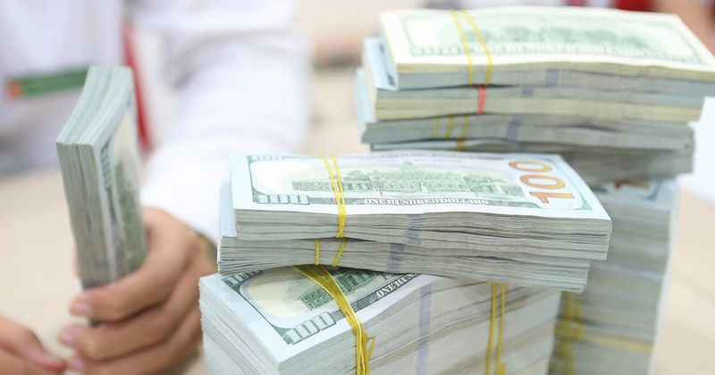
Giá USD hôm nay 7.6.2026: Đô Mỹ tăng vọt đẩy euro lao dốc 🔗 MOI
Sáng 7.6, giá USD tại các ngân hàng thương mại tiếp tục tăng trong tuần. Cụ thể, Ngân hàng Vietcombank mua chuyển khoản 26.124 đồng, bán ra 26.404 đồng, tăng 9 đồng so với cuối tuần trước. Tương tự, N
Công khai doanh nghiệp bỏ địa chỉ: Chắn rủi ro, bảo vệ người ngay 🔗 MOI
Tại dự thảo Nghị định hướng dẫn Luật Quản lý thuế mới, Bộ Tài chính đề xuất công khai thông tin người nộp thuế ngừng hoạt động hoặc bỏ địa chỉ kinh doanh. Dữ liệu công bố gồm họ tên và một phần thông
Phát huy vai trò chủ đạo của kinh tế nhà nước trong kỷ nguyên mới 🔗 MOI
Kinh tế Thay vì dựa trên quy mô sở hữu, bài viết phân tích vai trò của kinh tế nhà nước trong nền kinh tế Việt Nam theo cách tiếp cận chức năng: ổn định kinh tế vĩ mô, định hướng phát triển và thiết l
Đằng sau làn sóng nhập khẩu ô tô Trung Quốc 🔗 MOI
Theo số liệu từ Cục Hải quan, tháng 4-2026, Việt Nam nhập khẩu 16.580 ô tô nguyên chiếc, giảm mạnh 34,35% so với tháng trước. Trong đó, Trung Quốc vươn lên dẫn đầu với 6.856 xe, vượt Thái Lan với 4.82
Thanh toán số trở thành 'hệ điều hành' của nền kinh tế 🔗 MOI
Phó thủ tướng Nguyễn Văn Thắng cùng nhiều đại biểu tham quan và trải nghiệm tại gian hàng Ngân hàng NCB - Ảnh: QUANG ĐỊNH Tham dự buổi khai mạc có Phó thủ tướng Nguyễn Văn Thắng, Thống đốc Ngân hàng N
Đổi mới mô hình tăng trưởng gắn với tái cơ cấu nền kinh tế trong giai đoạn mới 🔗 MOI
Pháp luật Triển khai Nghị quyết số 07-NQ/TW ngày 18/11/2016 của Bộ Chính trị về chủ trương, giải pháp cơ cấu lại ngân sách nhà nước, quản lý nợ công, việc cơ cấu lại ngân sách nhà nước, quản lý nợ côn

Tiếp nhận phản ánh kiến nghị của doanh nghiệp 🔗 MOI
HỌ VÀ TÊN * EMAIL * SỐ ĐIỆN THOẠI * ĐỊA CHỈ * TIÊU ĐỀ * FILES ĐÍNH KÈM NỘI DUNG * RadEditor - HTML WYSIWYG Editor. MS Word-like content editing experience thanks to a rich set of formatting tools, dro
Phim 'The Odyssey' của Nolan cháy vé tại Mỹ 🔗 MOI
Theo Variety , dự án chuyển thể sử thi do đạo diễn Christopher Nolan thực hiện được Hiệp hội Điện ảnh Mỹ (MPA) xếp hạng R, đồng nghĩa khán giả dưới 17 tuổi cần có người lớn đi cùng. Giới chuyên môn nh
Kai Havertz toả sáng, Đức 'khởi động' nhẹ nhàng với chủ nhà Mỹ 🔗 MOI
Đức chạy đà hoàn hảo cho World Cup 2026 Phút thứ 2, từ quả đá phạt của Joshua Kimmich, Kai Havertz chọn vị trí thuận lợi trước khi bật cao đánh đầu tung lưới tuyển Mỹ, mở tỷ số cho Đức. Tưởng như bàn
Kai Havertz ghi bàn, tuyển Đức hạ chủ nhà Mỹ trước thềm World Cup 🔗 MOI
Thất bại trước tuyển Đức là trận thua thứ… 11 liên tiếp trước các đối thủ châu Âu của chủ nhà Mỹ và giới chuyên môn đành phải động viên đoàn quân của HLV Mauricio Pochettino bằng nhiều lời có cánh, hy
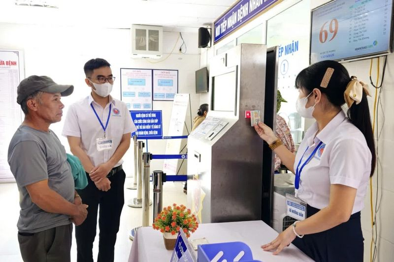
Ngành Tài chính tập trung triển khai hiệu quả Đề án 06 giai đoạn 2026-2030 🔗 MOI
Bộ trưởng Bộ Tài chính vừa ký ban hành Quyết định số 1316/QĐ-BTC phê duyệt Chương trình triển khai Đề án “Phát triển ứng dụng dữ liệu về dân cư, định danh và xác thực điện tử phục vụ chuyển đổi số quố
Chiến sự Nga - Ukraine 7-6: Ukraine tập kích Petersburg bằng hàng trăm UAV; Nga nói về việc nối lại quan hệ với Mỹ 🔗 MOI
Chiến sự Nga - Ukraine tiếp tục leo thang với nhiều diễn biến nóng. Ukraine tập kích Petersburg bằng hàng trăm UAV Ngày 6-6, quân đội Ukraine cho biết các đơn vị vận hành máy bay không người lái (UAV)
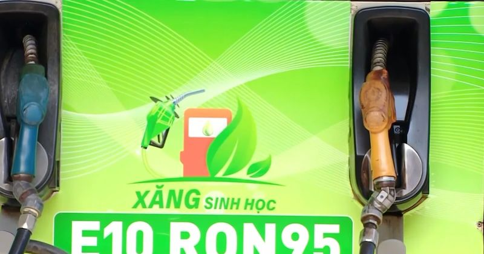
[Video] Kiểm tra, giám sát chất lượng xăng E10 tại nhiều địa phương 🔗 MOI
Theo Kế hoạch, hoạt động kiểm tra sẽ được triển khai trong năm 2026, trọng tâm trong các tháng 6, 7 và 8. Đối tượng kiểm tra gồm các tổ chức sản xuất, pha chế xăng sinh học E10 cùng một số thương nhân
Việt Nam sắp có ô tô điện mini mới: 'Bản sao' xe TMT Motors định sản xuất trong nước? 🔗 MOI
Mẫu ô tô điện mini mới được đăng ký tại Việt Nam - Ảnh: NOIP Dữ liệu từ Cục Sở hữu trí tuệ Việt Nam ghi nhận pháp nhân Zhejiang Haotao Technology Co., Ltd. (Chiết Giang, Trung Quốc) đã nộp đơn đăng ký
Khơi thông các động lực tăng trưởng kinh tế Việt Nam 🔗 MOI
Pháp luật Nhờ sự phối hợp đồng bộ của chính sách tài khóa và tiền tệ trong việc thúc đẩy cầu trong nước, kinh tế Việt Nam năm 2025 phục hồi mạnh, với tăng trưởng vượt mục tiêu đề ra. Về ổn định kinh t
Hà Nội làm điều đặc biệt với siêu dự án “kỳ tích sông Hồng” 28 tỷ USD của liên danh Đại Quang Minh – THACO – Hòa Phát 🔗 MOI
TIN MỚI UBND TP Hà Nội vừa ban hành quyết định thành lập Tổ công tác triển khai thực hiện thông tin, tuyên truyền Dự án đầu tư xây dựng Trục đại lộ cảnh quan sông Hồng. Phó Chủ tịch UBND TP Hà Nội Trư
PODCAST: Top 6 doanh nghiệp bất động sản triển vọng nhất Việt Nam và 4 xu hướng đáng chú ý của thị trường 🔗 MOI
Hiệp hội Bất động sản Việt Nam vừa tổ chức Lễ trao Giải thưởng Quốc gia Bất động sản Việt Nam lần thứ 2. Trong đó, Ban tổ chức đã lựa chọn và vinh danh 6 doanh nghiệp bất động sản triển vọng nhất Việt
Xe Trung Quốc liên tiếp ‘đổ bộ’ vào phân khúc nóng nhất thị trường Việt 🔗 MOI
Nếu không phân biệt hệ truyền động, nhóm SUV cỡ B (gồm cả B+) tại Việt Nam hiện có hơn 20 mẫu xe góp mặt. Một số cái tên nổi bật trong nhóm này gồm VinFast VF 6, Toyota Yaris Cross và Corolla Cross, M
14 năm nghiên cứu chỉ còn 18 tháng: AI của Google đẩy ngành dược tới cuộc cách mạng mới 🔗 MOI
14 năm nghiên cứu có thể chỉ còn 18 tháng: AI của Google đang đẩy ngành dược tới cuộc cách mạng chưa từng có Mai Mai | 07/06/2026 07:40 AM | Công nghệ Theo dõi Cafebiz.vn trên Kỉ nguyên thử sai bằng c
Điều hiếm gặp xảy ra trên thị trường tài chính toàn cầu 🔗 MOI
Diễn biến bất thường: Tài sản đồng loạt lao dốc Phiên giao dịch cuối tuần ngày 5/6 chứng kiến một diễn biến hiếm gặp trên thị trường tài chính toàn cầu khi hàng loạt loại tài sản từ vàng, chứng khoán
Tin tức sáng 7-6: Tài khoản nhà đầu tư chứng khoán lập kỷ lục mới, vượt 13 triệu 🔗 MOI
Số lượng tài khoản chứng khoán lập kỷ lục mới - Ảnh: HỮU HẠNH Tài khoản nhà đầu tư chứng khoán lập kỷ lục, vượt 13 triệu Theo số liệu từ Tổng công ty Lưu ký và bù trừ chứng khoán Việt Nam (VSD), tính
Hệ số điều chỉnh giá đất TPHCM áp dụng từ 1/7 có tác động gì? 🔗 MOI
Hài hoà lợi ích Sở Nông nghiệp và Môi trường TPHCM đang lấy ý kiến dự thảo quy định hệ số điều chỉnh giá đất (hệ số K) áp dụng từ ngày 1/7 trên địa bàn. Theo lãnh đạo Sở Nông nghiệp và Môi trường TPHC
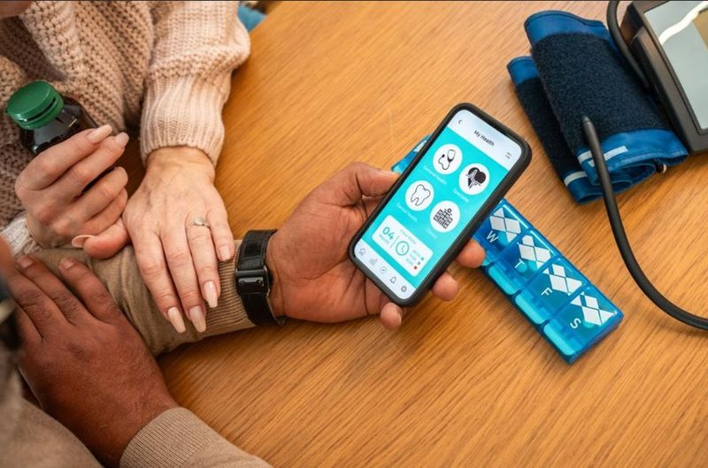
Đến năm 2050 sẽ có 2,1 tỷ người cao tuổi, AI đang chuẩn bị cho cuộc khủng hoảng này như thế nào? 🔗 MOI
Đến năm 2050 sẽ có 2,1 tỷ người cao tuổi, AI đang chuẩn bị cho cuộc khủng hoảng này như thế nào? Mai Mai | 07/06/2026 07:23 AM | Công nghệ Theo dõi Cafebiz.vn trên Không phải bác sĩ hay con cháu, chín
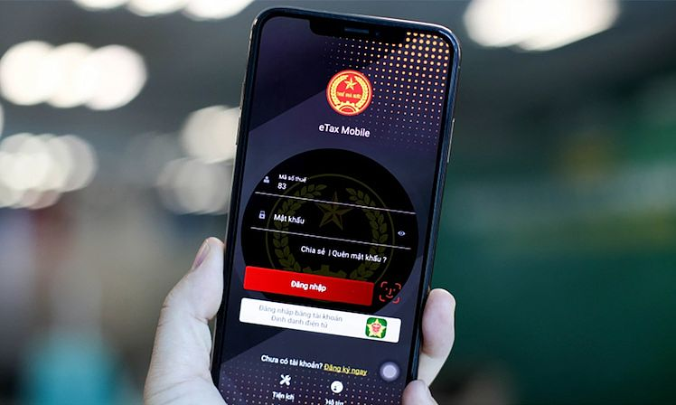
Vướng mắc thủ tục hoàn thuế: Cần làm gì khi người phụ thuộc có hai mã số thuế? 🔗 MOI
Tuy nhiên, khi làm thủ tục quyết toán thuế thu nhập cá nhân, hồ sơ của tôi bị trả về với lý do mẹ tôi có hai mã số thuế. Tôi hỏi vài người quen, một số bảo rằng phải làm thủ tục xóa một mã số thuế cho
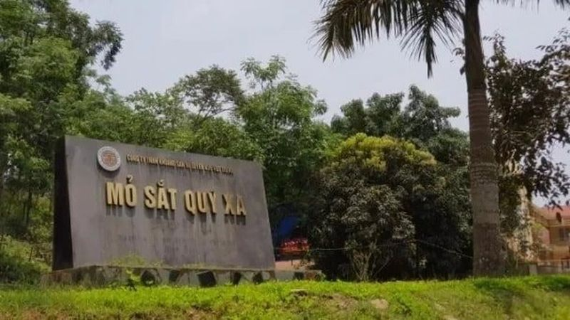
Kho báu hơn 73 triệu tấn tại Lào Cai chuẩn bị khai thác trong 16 năm dưới bàn tay nhà đầu tư mới 🔗 MOI
TIN MỚI Dự án đầu tư khai thác khoáng sản quặng sắt tại mỏ sắt Quý Xa (xã Văn Bàn, tỉnh Lào Cai) đang bước vào giai đoạn hoàn thiện các thủ tục môi trường và chuẩn bị khai thác công nghiệp. Theo báo c
Lộ diện tiến độ siêu sân vận động lớn thứ 2 Việt Nam tại Hưng Yên: Hạ tầng vượt chuẩn FIFA, sở hữu công nghệ chưa từng có tại Việt Nam 🔗 MOI
TIN MỚI Được khởi công vào ngày 19/10/2025 tại xã Nghĩa Trụ, tỉnh Hưng Yên, dự án sân vận động PVF do Bộ Công an làm chủ đầu tư sở hữu quy mô sức chứa lên tới 60.000 chỗ ngồi (gấp 1,5 lần sân Mỹ Đình)
Ứng dụng AI trong phát triển dự án phim ngắn 🔗 MOI
Sự kiện nằm trong chương trình Vườn ươm tài năng điện ảnh - HCMC Short Form Film Lab , thuộc khuôn khổ Liên hoan phim ngắn TP.HCM lần thứ II - năm 2026. Workshop giới thiệu xu hướng làm phim hiện nay
Cậu học sinh 16 tuổi liên tiếp thắng nhà vô địch cờ tướng Trung Quốc 🔗 MOI
Vương Vũ Bác (trái) vẫn chưa thể khôi phục phong độ của nhà vô địch cờ tướng Trung Quốc - Ảnh: BAIDU Phong độ của Vương Vũ Bác luôn là một trong những yếu tố được quan tâm nhất ở làng cờ tướng đỉnh ca
Khai mạc Liên hoan phim ngắn TP.HCM lần 2, hiện thực hóa cam kết với UNESCO 🔗 MOI
Ông Nguyễn Mạnh Cường - Ủy viên dự khuyết Trung ương Đảng, Ủy viên Ban Thường vụ Thành ủy, Phó chủ tịch UBND TP.HCM - phát biểu tại lễ khai mạc Liên hoan phim ngắn TP.HCM lần 2 - Ảnh: HTV1 Tham dự chư
Cà phê phin Việt tỏa hương trên đất Mỹ 🔗 MOI
Lê Thị Kim Khuyên bên chiếc máy pha cà phê phin “độc nhất vô nhị” - Ảnh: NVCC Ngày 21-3-2026, các nhà báo của VTV4 đã kể trên sóng truyền hình một câu chuyện gần 4 phút về hành trình 4 năm của cô gái
Kiến tạo không gian phát triển mới cho kinh tế tập thể 🔗 MOI
Pháp luật Trong giai đoạn 2021-2025, dựa vào mục tiêu phát triển, điều kiện ngân sách và nhu cầu hỗ trợ, năng lực của các hợp tác xã, Thủ tướng Chính phủ đã ban hành Chương trình hỗ trợ phát triển kin
Nhìn lại 1 năm thực thi Nghị quyết 68-NQ/TW 🔗 MOI
Doanh nghiệp Sau 1 năm triển khai Nghị quyết số 68-NQ/TW, nhiều doanh nghiệp công nghệ Việt ghi nhận những chuyển biến tích cực từ môi trường kinh doanh, cơ chế hỗ trợ và tư duy điều hành theo hướng k
Tạp chí Kinh tế Sài Gòn 🔗 MOI
Kinh tế Sài Gòn giữ bản quyền nội dung của trang web thesaigontimes.vn. Không sử dụng lại nội dung trên trang này dưới mọi hình thức, trừ khi được Kinh tế Sài Gòn đồng ý bằng văn bản. Trang ngoài sẽ đ
Tạp chí Kinh tế Sài Gòn 🔗 MOI
Kinh tế Sài Gòn giữ bản quyền nội dung của trang web thesaigontimes.vn. Không sử dụng lại nội dung trên trang này dưới mọi hình thức, trừ khi được Kinh tế Sài Gòn đồng ý bằng văn bản. Trang ngoài sẽ đ

Khu Công nghiệp, Khu Kinh tế 🔗 MOI
Bộ Tài chính đã và đang nỗ lực không ngừng để cải cách thủ tục hành chính, bảo đảm các lĩnh vực thuộc phạm vi quản lý nhà nước của Bộ Tài chính luôn thông suốt theo mô hình chính quyền địa phương 2 cấ
Tạp chí Kinh tế Sài Gòn 🔗 MOI
Kinh tế Sài Gòn giữ bản quyền nội dung của trang web thesaigontimes.vn. Không sử dụng lại nội dung trên trang này dưới mọi hình thức, trừ khi được Kinh tế Sài Gòn đồng ý bằng văn bản. Trang ngoài sẽ đ
Tạp chí Kinh tế Sài Gòn 🔗 MOI
Kinh tế Sài Gòn giữ bản quyền nội dung của trang web thesaigontimes.vn. Không sử dụng lại nội dung trên trang này dưới mọi hình thức, trừ khi được Kinh tế Sài Gòn đồng ý bằng văn bản. Trang ngoài sẽ đ
World Bank đánh giá cao triển vọng kinh tế Việt Nam 🔗 MOI
TIN MỚI Ảnh minh họa Nền kinh tế Việt Nam thể hiện sức chống chịu đáng kể trước các cú sốc toàn cầu, với tăng trưởng thuộc nhóm cao nhất khu vực, đạt khoảng 8% trong vài năm trở lại đây. Đây là nhận đ
Tuyển thủ dự World Cup 2026 bị giam giữ 7 tiếng khi nhập cảnh vào Mỹ vì nghi liên quan tới khủng bố 🔗 MOI
Theo Kora Plus - kênh truyền thông thể thao uy tín của Ai Cập - ngay khi đội tuyển Iraq hạ cánh, Aymen Hussein đã bị các nhân viên an ninh biên phòng Mỹ yêu cầu tách riêng khỏi đội. Trong khi toàn đội
Mỹ tính sử dụng tài sản Iran để tái thiết cho các đồng minh vùng Vịnh 🔗 MOI
Hình ảnh hai cố lãnh tụ tối cao Iran trên quảng trường ở Tehran. (Ảnh: Reuters) Thông tin này được đưa ra sau khi Iran tiến hành hàng loạt cuộc tấn công nhằm vào Kuwait và Bahrain. Nguồn tin cho biết
Five Star Group được vinh danh Top 10 Nhà phát triển Bất động sản 2026 🔗 MOI
Năng lực phát triển bất động sản được ghi nhận ở tầm khu vực Ngày 5.6.2026, tại lễ trao giải Hubexo Asia Awards 2026 diễn ra ở khách sạn Sheraton Saigon, Five Star Group đã được vinh danh với hạng mục
Ngày hội gia đình Làng Việt tại Mỹ lan tỏa tinh thần đoàn kết cộng đồng 🔗 MOI
Facebook Twitter Lưu bài viết Bản in Copy link Hướng tới Ngày Gia đình Việt Nam (28/6), Đại sứ quán Việt Nam tại Mỹ ngày 6/6 đã tổ chức Ngày Gia đình Làng Việt năm 2026 với sự tham dự của gần 150 cán
Nauru - quốc gia từng giàu bậc nhất thế giới nhờ phân chim giờ thành bãi rác 🔗 MOI
TIN MỚI Có những quốc gia làm giàu nhờ dầu mỏ, có nơi dựa vào công nghệ hay du lịch. Nhưng có một hòn đảo nhỏ bé giữa Thái Bình Dương đã làm nên lịch sử theo cách không ai ngờ tới: trở thành quốc gia
Em gái ông Kim Jong-un tuyên bố 'không thể thương lượng' chương trình hạt nhân 🔗 MOI
"Vị thế quốc gia sở hữu vũ khí hạt nhân của chúng tôi là điều không thể đem ra thương lượng, đây là thực tế không thể phủ nhận", bà Kim Yo-jong, Trưởng Ban Tổng vụ đảng Lao động Triều Tiên, ra tuyên b
Kết quả bóng đá hôm nay 7/6: Bồ Đào Nha thắng vất vả, Brazil hạ Ai Cập 🔗 MOI
Kết quả bóng đá hôm nay NGÀY GIỜ TRẬN ĐẤU TRỰC TIẾP GIẢI VÔ ĐỊCH U19 ĐÔNG NAM Á 2026 06/06 20:00 U19 Campuchia 3-0 U19 Philippines TV360 GIAO HỮU CÁC ĐTQG 2026 06/06 20:00 Bỉ 5-0 Tunisia 06/06 23:00 A
Rộ tin tình báo Israel tăng cường do thám quan chức Mỹ 🔗 MOI
NBC News ngày 6.6 dẫn lời các quan chức đương nhiệm và một cựu quan chức Mỹ cho biết Lầu Năm Góc đang ngày càng lo ngại về việc đồng minh Israel gia tăng theo dõi mình. Cơ quan Tình báo quốc phòng (DI
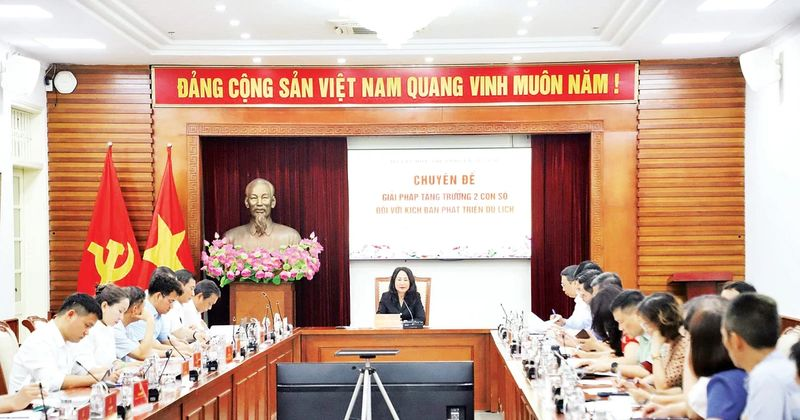
Du lịch Việt Nam phấn đấu mục tiêu tăng trưởng hai con số 🔗 MOI
Những nội dung được bàn thảo tại cuộc họp cho thấy du lịch được nhìn nhận không đơn thuần là ngành dịch vụ, mà được định vị là động lực tăng trưởng kinh tế trực tiếp vào chiến lược phát triển đất nước
Mỹ định dùng tài sản của Iran để bồi thường thiệt hại khắp vùng Vịnh 🔗 MOI
Khói bốc lên sau khi Iran tấn công tên lửa vào trụ sở chính của Hạm đội 5 Hải quân Mỹ ở Bahrain. Ảnh: Anadolu Theo tờ Times of Israel, một nguồn tin nắm rõ vấn đề này cho biết như vậy hôm 6/6, một ngà
Thế giới đang nguy hiểm hơn chúng ta tưởng? 🔗 MOI
Theo ông, về mặt địa chính trị, thế giới đang hỗn loạn, chủ yếu là vì Mỹ - vẫn là siêu cường - đã trở thành một tác nhân không đáng tin cậy. Tổng thống Mỹ Donald Trump đang phá vỡ trật tự quốc tế mà W
Trồng rau nuôi gà trên sân thượng, vợ chồng Đồng Nai có thực phẩm sạch quanh năm 🔗 MOI
Một góc khu vườn sân thượng nhìn từ trên cao của chị Hậu Khu vườn trên cao Gần 1 năm nay, chị Hậu Phạm (xã Phước Thái, TP Đồng Nai ) giữ thói quen thức dậy ngay khi mặt trời mọc. Chị lên khu vườn trên
Chuyến thăm của ông Tập Cận Bình và bàn cờ Đông Bắc Á 🔗 MOI
Khẳng định chỗ đứng Chuyến thăm sẽ diễn ra từ 8-9/6, chỉ ít ngày sau khi ông Tập lần lượt tiếp đón Tổng thống Mỹ Donald Trump và Tổng thống Nga Vladimir Putin tại Bắc Kinh. Nhiều chuyên gia cho rằng,
Chuyên đề Agribank 🔗 MOI
Trước áp lực thực thi Nghị định số 70/2025/NĐ-CP về hóa đơn điện tử và quản lý thuế, Agribank tổ chức hội nghị tập huấn toàn quốc, thống nhất quy trình hỗ trợ và giới thiệu gói giải pháp số dành riêng
TỔNG QUAN TỔNG QUAN KINH TẾ 🔗 MOI
Kinh tế Hoạt động điều hành chính sách tài khóa năm 2025 diễn ra trong bối cảnh tình hình kinh tế trong nước và quốc tế tiếp tục diễn biến phức tạp, căng thẳng thương mại toàn cầu gia tăng, đặc biệt l
Tiếp nhận phản ánh kiến nghị của công dân 🔗 MOI
HỌ VÀ TÊN * EMAIL * SỐ ĐIỆN THOẠI * ĐỊA CHỈ * TIÊU ĐỀ * FILES ĐÍNH KÈM NỘI DUNG * RadEditor - HTML WYSIWYG Editor. MS Word-like content editing experience thanks to a rich set of formatting tools, dro
Lịch sử World Cup 2014: Nỗi đau của Lionel Messi 🔗 MOI
World Cup 2014 diễn ra tại 12 sân vận động thuộc 12 thành phố ở Brazil từ ngày 12/6 đến 13/7 với sự tham dự của 32 đội tuyển. Đây là lần thứ 2 trong lịch sử, quốc gia Nam Mỹ này được đăng cai ngày hội
Nguyễn Gia Hy: Học bổng tiến sĩ ở tuổi 21 và khát vọng kiến tạo thế hệ AI Việt 🔗 MOI
Nguyễn Gia Hy đã hoàn thành chương trình Tiến sĩ Trí tuệ nhân tạo (AI) tại Đại học Deakin, Úc. Là cựu học sinh Trường THPT chuyên Lê Quý Đôn (Khánh Hòa), Nguyễn Gia Hy sớm xây dựng nền tảng các môn kh
Cứ điểm thu hút "đại bàng toàn cầu" của Việt Nam: Xây 2 dự án 6.000 tỷ, bán thứ mà Samsung rất thích 🔗 MOI
TIN MỚI Cổng thông tin điện tử tỉnh Bắc Ninh ngày 5/6 cho biết, UBND tỉnh Bắc Ninh tổ chức Chương trình trao Quyết định chấp thuận chủ trương đầu tư đồng thời chấp thuận nhà đầu tư đối với 2 dự án điệ
Công nghệ mới trong điều trị ung thư mở ra hy vọng cho tương lai y học 2026 🔗 MOI
Từ ung thư đến Alzheimer, công nghệ mới đang mở đường cho thế hệ thuốc mà ngành dược chờ đợi hàng chục năm Minh Ngọc | 07/06/2026 07:46 AM | Công nghệ Theo dõi Cafebiz.vn trên Các đại gia dược phẩm đa
Ukraine xin lỗi Hy Lạp vì sự cố xuồng không người lái đi lạc 🔗 MOI
Xuồng không người lái của Ukraine. Ảnh: CNN Theo Kyiv Independent, tuyên bố được đưa ra sau khi Hy Lạp gửi công hàm phản đối ngoại giao chính thức tới Ukraine vào ngày 3/6 về vụ việc trên. Chiếc xuồng
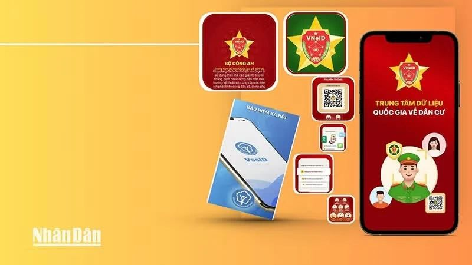
Mở rộng hệ sinh thái tiện ích số trên VNeID 🔗 MOI
Đây là định hướng quan trọng nhằm khai thác hiệu quả dữ liệu dân cư, xây dựng chính quyền số, kinh tế số và xã hội số, đồng thời nâng cao chất lượng phục vụ người dân, doanh nghiệp. Quá trình xây dựng
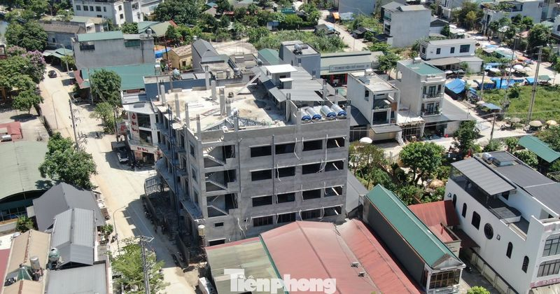
Lào Cai: Công trình gần 3.000m² xây sai phép vẫn thi công sau lệnh đình chỉ 🔗 MOI
Như báo Tiền Phong đã phản ánh, tại "thủ phủ đá quý" Lục Yên, Lào Cai, công trình xây dựng nhà ở quy mô khủng của gia đình ông Bùi Đình Hiệp xây dựng sai thiết kế, giấy phép xây dựng gây lún nứt nhà d
Hướng tới World Cup 2026: Chờ cuộc đổi ngôi của bóng đá Á - Phi 🔗 MOI
World Cup 2026 có thể chưa chứng kiến nhà vô địch đầu tiên đến từ châu Á hay châu Phi, song nhiều khả năng sẽ là cột mốc đánh dấu sự thay đổi sâu sắc trong cán cân quyền lực của bóng đá toàn cầu. Hiện
'Mở khóa' công nghệ lượng tử, tạo động lực phát triển dài hạn 🔗 MOI
Mở thế hệ công nghệ tiếp theo Tại buổi làm việc của Thường trực Ban Chỉ đạo cho ý kiến về Đề án "Nghiên cứu ứng dụng và phát triển công nghệ lượng tử phục vụ phát triển kinh tế - xã hội, đảm bảo quốc

Kiến nghị áp dụng mức giá chung cho điện sinh khối 🔗 MOI
Nội dung là kiến nghị tháo gỡ những vướng mắc trong cơ chế phát triển điện sinh khối từ các nhà máy đường. Theo hiệp hội, dù Quy hoạch điện VIII xác định ưu tiên phát triển các nguồn năng lượng tái tạ
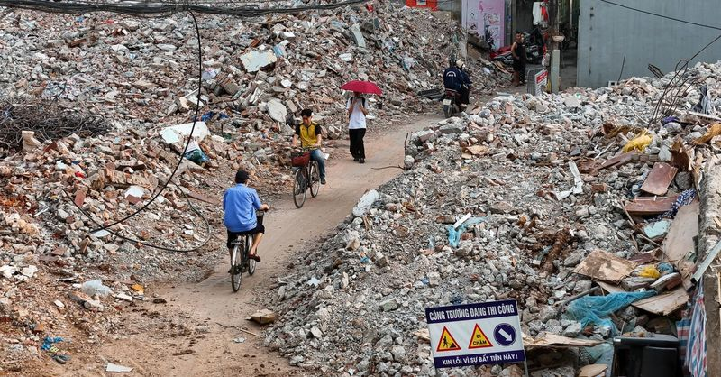
Rác thải xây dựng ở Hà Nội sẽ được tái chế đưa vào dự án đầu tư công 🔗 MOI
Rác thải xây dựng còn tồn đọng ở dự án đường vành đai 2.5 - Ảnh: DANH KHANG Theo đó rác thải xây dựng sau khi được nghiền thành vật liệu tái chế sẽ được sử dụng cho những dự án đầu tư công, BT, n

Ấn phẩm 🔗 MOI
Tạp chí Kinh tế - Tài chính Online. Cơ quan chủ quản: Bộ Tài chính Giấy phép xuất bản số: 107/GP-BVHTTDL ngày 26/8/2025. Tạp chí Kinh tế - Tài chính Online: e-ISSN 3093-3498.
Hà Nội sẽ tổ chức hội nghị xúc tiến đầu tư và công bố quy hoạch vào cuối tháng 6 🔗 MOI
Hội nghị xúc tiến đầu tư năm 2026 và công bố quy hoạch tổng thể Thủ đô Hà Nội tầm nhìn 100 năm nhằm quảng bá tiềm năng, cơ hội đầu tư và khẳng định vai trò đầu tàu tăng trưởng của Hà Nội. Ảnh minh hoạ

Chính phủ với doanh nghiệp 🔗 MOI
20/03/2026 (Chinhphu.vn) - Chính phủ ban hành Nghị quyết số 11/2026/NQ-CP về chi phí tiền lương Ngân hàng thương mại TNHH một thành viên Xây dựng Việt Nam, Ngân... 04/03/2026 (Chinhphu.vn) - Chính phủ
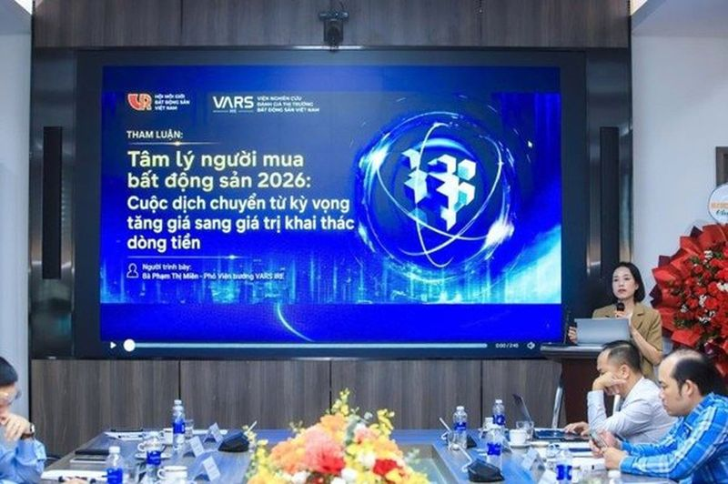
Phân khúc nào được kỳ vọng tăng giá nhiều nhất? 🔗 MOI
TIN MỚI Bà Phạm Thị Miền, Phó Viện trưởng Viện Nghiên cứu và Đánh giá thị trường bất động sản Việt Nam. Phát biểu tại Hội thảo “Nhận diện xu hướng tài chính bất động sản 2026” do Tạp chí Đầu tư Tài ch
Hạ tầng mở lối, Cần Giờ sẽ trở thành điểm đến lý tưởng của TPHCM 🔗 MOI
Nằm cách trung tâm TPHCM chưa đầy 60 km, nhưng trong nhiều năm qua, Cần Giờ vẫn được xem là vùng đất "xa mà gần". Sự biệt lập về giao thông khiến địa phương sở hữu nhiều tiềm năng đặc biệt này chưa th
Vinpearl phát hành lô trái phiếu hơn 4.900 tỷ đồng 🔗 MOI
VPL: Giá hiện tại Thay đổi Xem hồ sơ doanh nghiệp TIN MỚI Công ty cổ phần Vinpearl (mã: VPL, sàn HoSE) mới đây có báo cáo kết quả chào bán trái phiếu riêng lẻ gửi Sở giao dịch Chứng khoán Hà Nội (HNX)
AI tạo thành công 16 virus đầu tiên trên thế giới, đột phá mới thay thế thuốc kháng sinh đã bắt đầu? 🔗 MOI
AI tạo thành công 16 virus đầu tiên trên thế giới, đột phá mới thay thế thuốc kháng sinh đã bắt đầu? Mai Mai | 07/06/2026 07:33 AM | Công nghệ Theo dõi Cafebiz.vn trên Từ viết code đến viết gene, AI đ
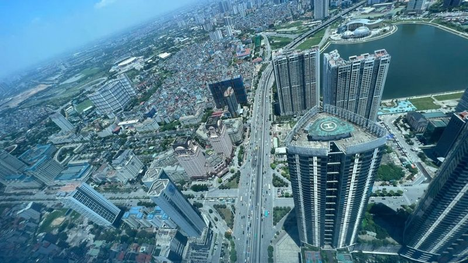
Bất động sản nội đô giữ nhiệt, vùng ven chờ bứt phá 🔗 MOI
Sự chững lại của thị trường bất động sản thời gian gần đây không diễn ra đồng đều. Trong khi bất động sản nội đô tiếp tục duy trì sức hút nhờ nhu cầu ở thực và khả năng khai thác dòng tiền, thì các kh
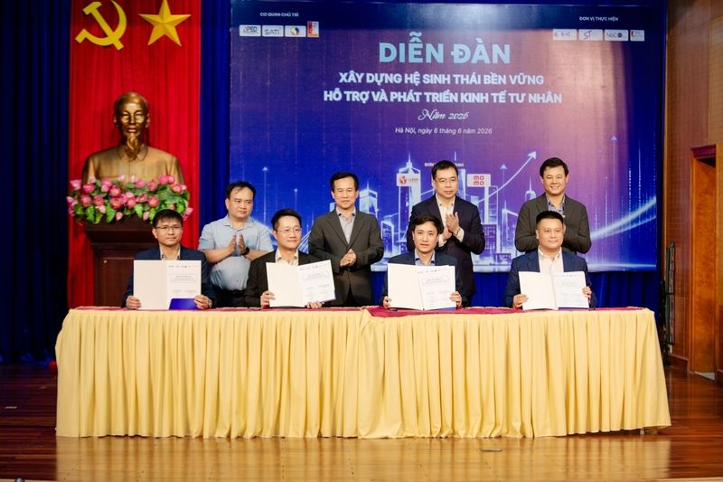
Hoàn thiện hệ sinh thái hỗ trợ doanh nghiệp tư nhân phát triển bền vững 🔗 MOI
Kinh tế tư nhân đang đứng trước cơ hội bứt phá nhờ những chính sách hỗ trợ ngày càng đồng bộ, có trọng tâm và gắn với đổi mới sáng tạo. Xu hướng chuyển từ “hỗ trợ” sang “kiến tạo năng lực” được kỳ vọn
Cảnh tượng ngỡ trên phim mới có: Sóng lớn tràn bờ, đổ ập xuống nhà hàng và đường phố 🔗 MOI
TIN MỚI Mới đây, hiện tượng sóng lớn tràn bờ đã mang lại trải nghiệm hy hữu cho những người ăn tối và tài xế dọc bờ biển Kailua-Kona, Hawaii, Mỹ. Đợt sóng lừng hướng nam lớn nhất mùa đã đạt đỉnh vào t
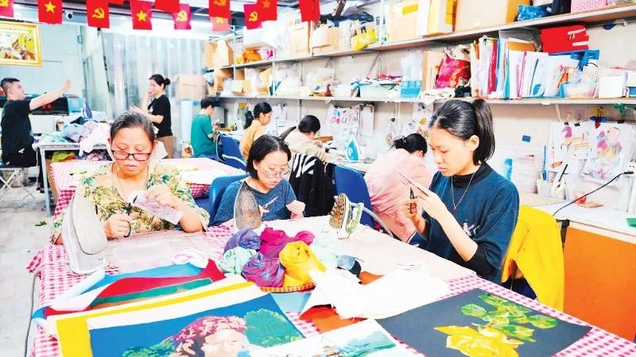
AI mở rộng cơ hội cho người khuyết tật 🔗 MOI
Trong dòng chảy mạnh mẽ của cuộc Cách mạng công nghiệp lần thứ tư, trí tuệ nhân tạo (AI) đang làm thay đổi cách con người học tập, lao động và giao tiếp. Với người khuyết tật, AI đang mở ra nhiều cơ h
Một chính sách, nhiều kỳ vọng 🔗 MOI
Đây được xem là một bước đi quan trọng trong bối cảnh đất nước đang đẩy mạnh phát triển khoa học, công nghệ, đổi mới sáng tạo và chuyển đổi số, đồng thời đặt ra yêu cầu cấp thiết về xây dựng đội ngũ n
Vùng Vịnh lại hứng đòn vì xung đột Iran 🔗 MOI
Reuters dẫn lời một quan chức Mỹ cho rằng Iran đã phóng máy bay không người lái (UAV) tấn công tàu thuyền trong khu vực trước. Do đó, Mỹ đã đáp trả vào các trạm giám sát tại Goruk và đảo Qeshm của Ira
Tòa bác bỏ những hạn chế nhập cư của chính quyền Trump 🔗 MOI
Những hạn chế này được áp đặt sau vụ một người đàn ông Afghanistan nhập cư xả súng tại Washington D.C vào ngày 26.11.2025, khiến một thành viên thuộc Lực lượng Vệ binh quốc gia Mỹ thiệt mạng. Một văn
Chiến sự Ukraine ngày 1.564: Ukraine quay lại tập kích St. Petersburg 🔗 MOI
Ukraine tấn công bằng UAV vào thành phố St. Petersburg trong lúc nơi này tổ chức diễn đàn kinh tế thế giới ảnh: reuters UAV Ukraine rầm rộ tập kích St. Petersburg, vùng Leningrad Sáng 6.6, ông Alexand
Tuyển Đức đánh bại chủ nhà Mỹ nhờ công Havertz và Sane 🔗 MOI
Trận đấu diễn ra với tốc độ nhanh ngay từ đầu Phút thứ 3, Kai Havertz mở tỷ số với quả đánh đầu cận thành chính xác Havertz ăn mừng dưới mưa Đến cuối hiệp một, Mỹ gỡ hòa nhờ siêu phẩm tuyệt đẹp của Ro
Thị trường xe máy điện nóng lên từng ngày 🔗 MOI
Xu hướng này xuất phát từ nhiều nguyên nhân. Trước hết, các thành phố lớn đang từng bước hạn chế xe máy chạy xăng vào khu vực trung tâm, trong khi giá xăng liên tục duy trì ở mức cao do tác động từ că
Trẻ sinh ra di truyền giang mai từ mẹ có điều trị được không? 🔗 MOI
Kiểm soát lạm phát trước những "biến số" cuối năm 🔗 MOI
Tài chính Tại Nghị quyết số 86/NQ-CP ngày 4/11/2025 về triển khai nhiệm vụ trọng tâm những tháng cuối năm 2025, Chính phủ tiếp tục yêu cầu về kiểm soát lạm phát, giữ vững ổn định kinh tế vĩ mô. Trong
Mỹ không kích, Iran phóng tên lửa đáp trả 🔗 MOI
Bác sĩ Mỹ nhiễm Ebola tại Congo xuất viện 🔗 MOI
Bệnh viện Charité ở thủ đô Berlin, Đức thông báo đã cho xuất viện một công dân Mỹ nhiễm Ebola tại Cộng hòa dân chủ Congo sau 17 ngày điều trị bằng thuốc kháng vi rút thử nghiệm. Người này cùng 5 thành
Bị gạch tên khỏi tuyển Pháp, Camavinga vẫn sang Mỹ để... học ở Harvard 🔗 MOI
Camavinga khoe tấm bằng nhận được từ Harvard - Ảnh: Instagram Camavinga (23 tuổi) từng ra sân cho tuyển Pháp ở trận chung kết World Cup 2022, nhưng anh đã bị HLV Didier Deschamps gạch tên tại giải lần
Tăng Phúc kể thời ra nhạc 'chẳng ai nghe', Nhà Chín Muồi hội ngộ tại mini concert Sun Song 🔗 MOI
Đây cũng là dịp để Tăng Phúc nhìn lại những thăng trầm trong sự nghiệp, đồng thời gửi lời tri ân đến khán giả đã đồng hành cùng anh suốt thời gian qua - Ảnh: MAI NGUYỆT Tăng Phúc đưa khán giả đi qua n
Chu Châu: Hình mẫu mặc đẹp cho phụ nữ trưởng thành 🔗 MOI
Chu Châu góp mặt liên tiếp 8 năm trong bảng xếp hạng 100 gương mặt đẹp nhất thế giới của TC Candler - Ảnh: Weibo Diễn viên Chu Châu cùng Chung Hán Lương đang gây chú ý với bộ phim truyền hình Trung Qu
Tin tức thế giới 7-6: Mỹ tính phân phối tài sản phong tỏa của Iran; Pakistan đi đàm phán thay Mỹ 🔗 MOI
Người dân Iran xuống đường mang theo ảnh chân dung Lãnh tụ tối cao Iran Mojtaba Khamenei - Ảnh: AFP Các cuộc tấn công mới của Mỹ và Iran thử thách thỏa thuận ngừng bắn Ngày 6-6, Iran chỉ trích Mỹ "thi
Bóng chuyền Thái Lan bị trừ điểm nặng, Việt Nam có cơ hội vượt mặt 🔗 MOI
Tuyển bóng chuyền nữ Thái Lan mất nhiều sau trận thua trước Bỉ - Ảnh: TVA Thái Lan bước vào giải bóng chuyền danh giá VNL mùa giải năm nay với sức ép cực lớn trong cuộc đua trụ hạng. Diễn ra thường ni
Huy động tài chính xanh hướng tới mục tiêu phát triển bền vững 🔗 MOI
Pháp luật Chuyển đổi năng lượng xanh đã trở thành xu thế toàn cầu mang tính bắt buộc, gắn liền với mục tiêu Net Zero và yêu cầu cạnh tranh trong chuỗi cung ứng quốc tế. Trong bối cảnh đó, doanh nghiệp
Điều hành giá cả thị trường, kiểm soát lạm phát năm 2026 🔗 MOI
Pháp luật Chính sách tiền tệ và chính sách tài khóa là hai công cụ quản lý kinh tế vĩ mô quan trọng của các quốc gia. Mỗi một chính sách đều có mục tiêu riêng nhưng chung quy lại đều cùng theo đuổi mụ
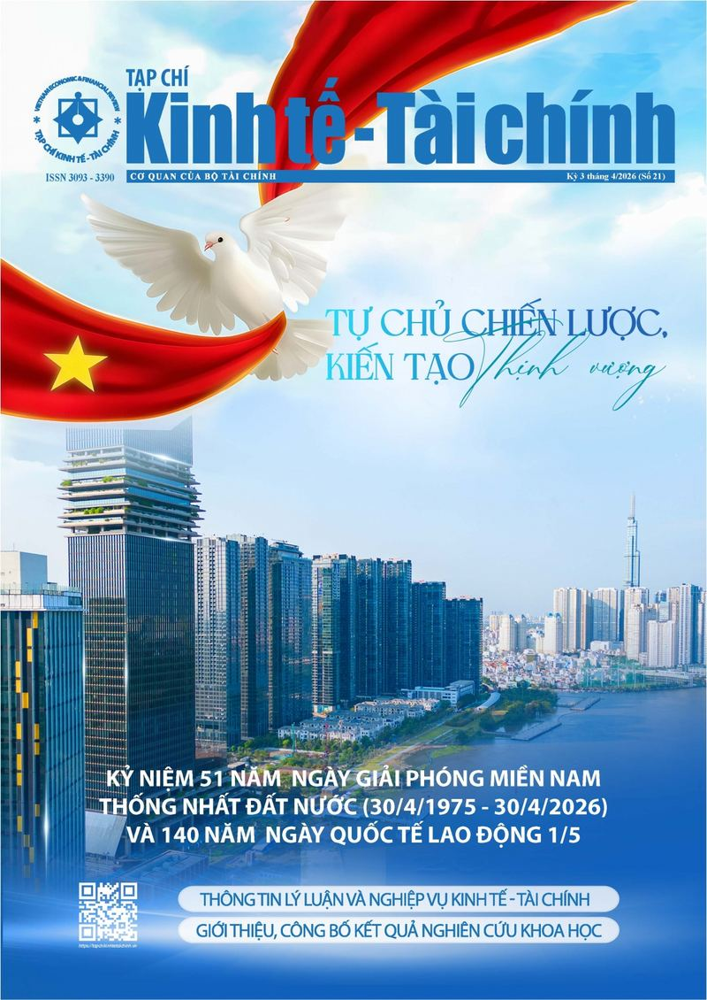
Tạp chí Kinh tế Tài chính kỳ 3 tháng 4/2026 🔗 MOI
Tạp chí Kinh tế Tài chính kỳ 1 tháng 5/2026 🔗 MOI
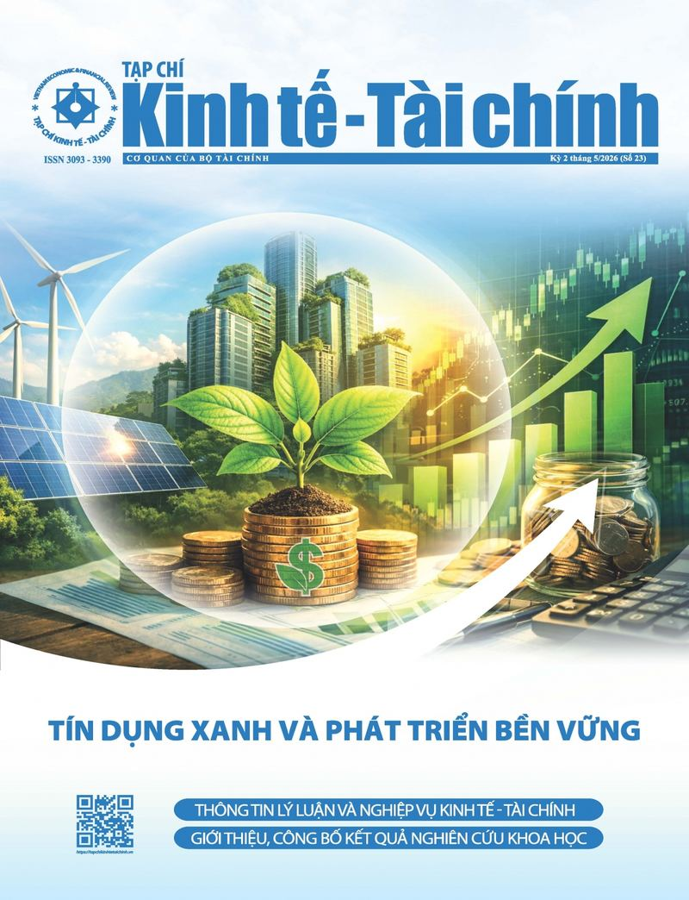
Tạp chí Kinh tế Tài chính kỳ 2 tháng 5/2026 🔗 MOI
Kỷ niệm 51 năm Ngày Giải phóng miền Nam, thống nhất đất nước: Tự chủ chiến lược, kiến tạo thịnh vượng 🔗 MOI
Kinh tế Trong bối cảnh cạnh tranh thu hút đầu tư công nghệ ngày càng quyết liệt, Việt Nam đang chủ động mở cánh cửa ra thế giới để đón các “đại bàng công nghệ”, coi đây là động lực quan trọng để chuyể

Nước CHXHCN Việt Nam 🔗 MOI
© Cổng Thông tin điện tử Chính phủ Tổng Giám đốc: Nguyễn Hồng Sâm Trụ sở: 16 Lê Hồng Phong - Ba Đình - Hà Nội. Điện thoại: Văn phòng: 080 43162; Fax: 080.48924 Email: thongtinchinhphu@chinhphu.vn Bản
Tất cả người dân có tài khoản ngân hàng chú ý đề xuất quy định mới nhất 🔗 MOI
TIN MỚI Ngân hàng Nhà nước hiện đang tiến hành lấy ý kiến rộng rãi đối với dự thảo Nghị định sửa đổi, bổ sung một số điều của Nghị định số 52/2024/NĐ-CP về lĩnh vực thanh toán không dùng tiền mặt. Căn
Tăng tốc thi công siêu cầu Tứ Liên gần 20.000 tỷ, hoàn thành hàng trăm cọc móng sau hơn 1 năm khởi công 🔗 MOI
TIN MỚI Nhà thầu đã huy động nhân lực, thiết bị triển khai thi công cọc khoan nhồi cùng nhiều hạng mục quan trọng. (Ảnh: Tiền Phong) Theo Ban Quản lý dự án đầu tư xây dựng công trình giao thông Hà Nội
Mỹ bí mật dẫn đường cho hơn 100 tàu thương mại vượt eo biển Hormuz giữa căng thẳng với Iran 🔗 MOI
TIN MỚI Theo New York Times (NYT), các lực lượng quân sự Mỹ đã hỗ trợ điều phối việc di chuyển an toàn cho hơn 100 tàu thương mại qua eo biển Hormuz trong tháng 5. Việc đi lại qua tuyến đường thủy này
Vì sao diễn viên Công Nương 'Quả tim máu' ở ẩn suốt 12 năm? 🔗 MOI
Buổi công chiếu phim Lầu chú Hỏa vừa diễn ra tại TPHCM. Đây là lần đầu tiên điện ảnh Việt khai thác phong cách giả tài liệu trong thể loại kinh dị. Toàn bộ diễn biến phim được ghi lại qua góc nhìn máy
Laptop AI dùng chip AMD Ryzen, giá gần 40 triệu đồng 🔗 MOI
Thị trường máy tính xách tay đang bước vào giai đoạn cạnh tranh trong làn sóng AI, khi năng lực xử lý trí tuệ nhân tạo dần trở thành một trong những tiêu chuẩn mới. Ở nhóm máy tính mỏng nhẹ, Lenovo Yo
Không phải vạ thì má cũng sưng 🔗 MOI
Ở lần biểu quyết thứ 4, Hạ viện Mỹ hôm 3-6 đã thông qua nghị quyết yêu cầu Tổng thống Mỹ Donald Trump chấm dứt cuộc xung đột với Iran. Nghị quyết này tuy không có đủ hiệu lực pháp lý buộc ông Donald T
Hai nam ca sĩ nức tiếng một thời: U60 sống độc thân và mở quán cà phê 🔗 MOI
Ca sĩ Đàm Vĩnh Hưng Ở tuổi 55, ca sĩ Đàm Vĩnh Hưng có nhiều thay đổi trong tính cách, quan điểm làm nghề. Anh trở nên mềm tính, nhẹ nhàng, thay vì gai góc, xù xì và bất cần như cách mọi người vẫn hay
Giữ tiền hay giữ hạnh phúc? 🔗 MOI
Kết hôn đã 10 năm, chị N.T.H (phường Nhiêu Lộc, TP HCM) chưa bao giờ giữ lương của chồng. Mỗi tháng, sau khi nhận lương, hai người cùng chuyển một khoản cố định vào tài khoản chung để chi trả tiền nhà
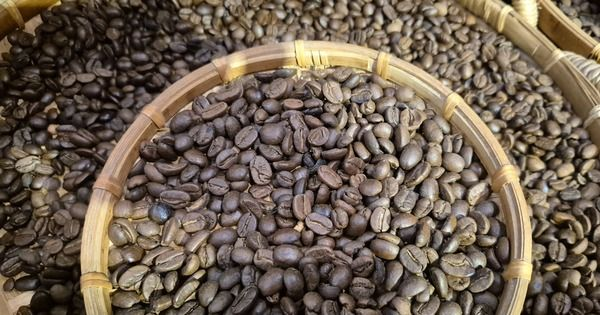
Giá cà phê hôm nay 7-6: Hàng cuối vụ giúp cà phê Việt Nam giảm chậm hơn thế giới 🔗 MOI
Hôm nay (7-6), các sàn giao dịch cà phê thế giới như London (Anh) và New York (Mỹ) nghỉ cuối tuần nên không có giá tham chiếu mới. Một tuần rớt đậm TIN LIÊN QUAN Giá cà phê hôm nay 6-6: Brazil được mù
Bồ Đào Nha 2-1 Chile: Hai thẻ đỏ và 3 bàn thắng, rượt đuổi ngoạn mục 🔗 MOI
Thống kê cho thấy sự áp đảo của Bồ Đào Nha trước Chile, đội đã không thể giành vé tham dự World Cup 2026. Đội chủ nhà kiểm soát bóng tới 80%, áp đảo Chile trong phần lớn thời gian trận đấu. Tuy nhiên,
Khai mạc chương trình “Lăng Cô-Vịnh đẹp thế giới” 🔗 MOI
Chương trình diễn ra trong 2 ngày, là hoạt động nằm trong khuôn khổ Festival Huế 2026 , với chuỗi hoạt động văn hóa-thể thao-du lịch đặc sắc. Chương trình được tổ chức nhằm tiếp tục quảng bá hình ảnh
Lệnh ngừng bắn Mỹ - Iran tiếp tục bị vi phạm 🔗 MOI
Một trung tâm y tế ở Borj Qalaouiya, Lebanon trở thành đống đổ nát sau cuộc tấn công của Israel. Ảnh: SALLY HAYDEN / SOPA IMAGES / LIGHTROCKET Bên không kích, bên phóng tên lửa Bộ Tư lệnh Trung tâm Mỹ
Nữ sinh đạt 29,25 điểm C00 chỉ ra những sai lầm dễ khiến sĩ tử mất điểm trước kỳ thi THPT 🔗 MOI
Những ngày cuối chỉ nên tập trung hệ thống lại kiến thức và sửa lỗi sai Từ kinh nghiệm ôn thi của bản thân, Nguyễn Thị Huế khuyên các sĩ tử không nên cố gắng học thêm quá nhiều kiến thức mới trong gia
Đại học rốt ráo thu hút nghiên cứu sinh tiến sĩ 🔗 MOI
Những hỗ trợ trên là thông lệ phổ biến trong đào tạo tiến sĩ trên thế giới nhưng gần đây được một số trường ở Việt Nam rốt ráo triển khai. Cụ thể như sau: Cơ sở đào tạo Mức/chính sách hỗ trợ với nghiê
Bảo vệ lao động nền tảng số 🔗 MOI
Từ thực tiễn quản lý tại địa bàn có quy mô dân số, lao động và doanh nghiệp (DN) lớn, đồng thời là nơi phát triển nhanh các loại hình việc làm linh hoạt trong nền kinh tế số, BHXH TP HCM đã đề xuất bổ
"Níu giữ" tuổi xuân 🔗 MOI
Chỉ cần vài phút lướt điện thoại là có thể nhìn thấy rất nhiều gương mặt căng mịn, thân hình thon gọn và những lời hứa hẹn về vẻ đẹp không tuổi. Trong cuộc đua ấy, nỗi lo lớn nhất của nhiều phụ nữ khô
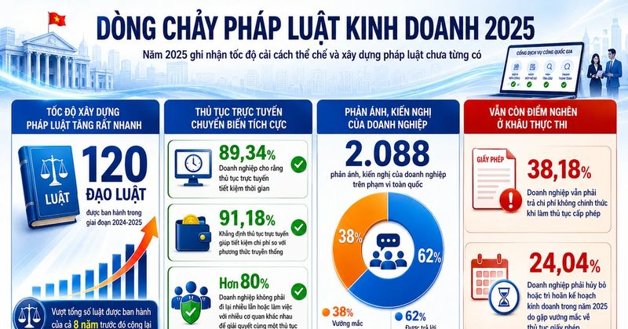
Xây dựng thể chế cho doanh nghiệp phát triển 🔗 MOI
Tuy nhiên, điều cộng đồng doanh nghiệp chờ đợi không chỉ thêm nhiều luật, giảm thêm nhiều thủ tục mà là cần một môi trường pháp lý ổn định, thống nhất và dễ dự báo để yên tâm sản xuất, kinh doanh, tạo
Xe máy đấu đầu, hai người thương vong 🔗 MOI
Theo camera nhà người dân ghi lại cho thấy, vào khoảng 22h09 phút, hai xe máy đi ngược chiều khi đến đoạn qua khu công nghiệp Giang Điền thì va chạm với nhau. Hiện trường vụ va chạm (Ảnh do người dân
Cuộc sống của cậu bé lai từng hát cùng Như Quỳnh 🔗 MOI
Cách đây 2 năm, rapper nhí Shumo AG từng gây chú ý khi góp mặt trong liveshow của ca sĩ Như Quỳnh . Trên sân khấu, cậu bé có màn kết hợp với giọng ca Duyên phận , nhận được sự ủng hộ của khán giả. Đây
Huyền thoại của MU Roy Keane và mối thù dai dẳng tại Aston Villa 🔗 MOI
(PLO)- "Tôi đã bất chấp lời thách thức của Roy Keane sau vụ cãi vã trong phòng tắm và ông ta đã từ chức huấn luyện viên ngay ngày hôm sau", đó là câu nói của ai? Huyền thoại của MU Roy Keane từng có n
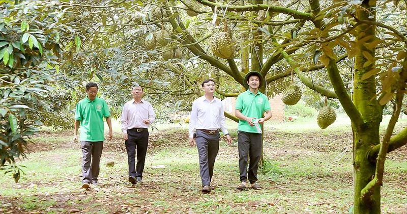
Nông dân bước vào kỷ nguyên số - Bài 1: Từ thửa ruộng đến không gian số 🔗 MOI
LTS : Đại hội đại biểu toàn quốc Hội Nông dân Việt Nam lần thứ IX, nhiệm kỳ 2026-2031 diễn ra ngày 7 và 8-6 tại Trung tâm Hội nghị quốc gia (Hà Nội). Đây là sự kiện chính trị quan trọng của giai cấp n
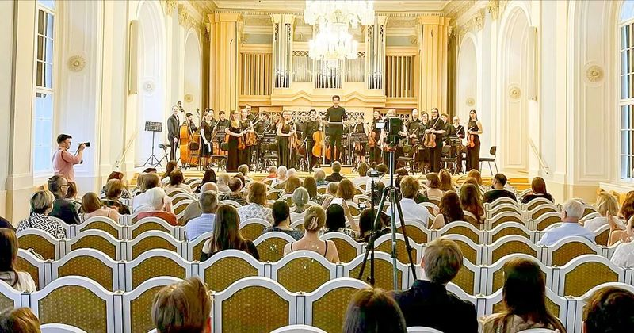
Dấu ấn nhạc trưởng trẻ gốc Việt tại Czech 🔗 MOI
Viktor Le Minh đảm nhiệm vai trò chỉ huy dàn nhạc giao hưởng tại buổi hòa nhạc vừa diễn ra ngày 25-5 ở Praha Tại buổi hòa nhạc vừa diễn ra ngày 25-5 vừa qua ở Praha, Viktor Le Minh đảm nhiệm vai trò c
NATO tăng cường phòng thủ quanh Thụy Điển và Phần Lan 🔗 MOI
Facebook Twitter Lưu bài viết Bản in Copy link Theo AFP, Tổ chức Hiệp ước Bắc Đại Tây Dương (NATO) cho biết các lực lượng lục quân của khối này ngày 6/6 đã bắt đầu các hoạt động tăng cường khả năng ph
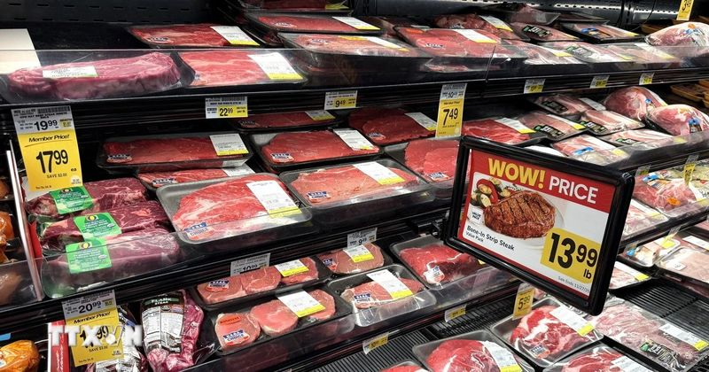
Xu hướng ăn “thuần thịt” ngày càng gia tăng mạnh tại Mỹ 🔗 MOI
Facebook Twitter Lưu bài viết Bản in Copy link Theo Fox News, xu hướng tiêu thụ đạm (protein) đang ngày càng gia tăng mạnh mẽ. Một khảo sát của Hội đồng Thông tin Thực phẩm Quốc tế chỉ ra rằng, vào nă
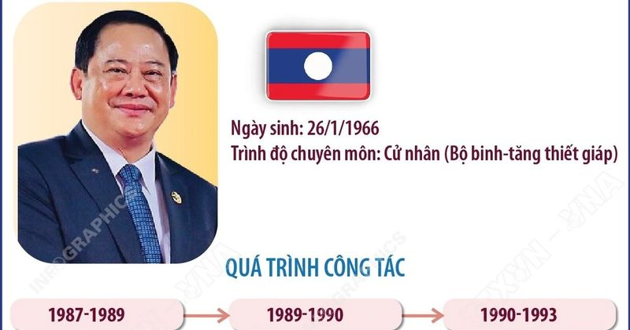
Thủ tướng Lào thăm chính thức Việt Nam và dự Diễn đàn Tương lai ASEAN 🔗 MOI
Facebook Twitter Lưu bài viết Bản in Copy link Nhận lời mời của Thủ tướng Chính phủ nước Cộng hòa xã hội chủ nghĩa Việt Nam Lê Minh Hưng, Thủ tướng nước Cộng hòa Dân chủ Nhân dân Lào Sonexay Siphandon
Vòng 26 V-League: Suất xuống hạng gọi tên ai? 🔗 MOI
LPBank V-League 2025/26 chính thức khép lại sau 7 trận đấu cùng diễn ra vào lúc 18h ngày 7/6. Ở vòng đấu này, mọi sự chú ý đổ dồn về các cặp đấu có đội tranh vé trụ hạng, cụ thể là trận SHB Đà Nẵng vs
Nguy cơ tái diễn thảm họa Ebola 🔗 MOI
Thông báo trên từ Bộ Ngoại giao Mỹ được đưa ra sau khi Trung tâm Kiểm soát và ngăn ngừa dịch bệnh Mỹ (CDC) công bố 3 báo cáo khoa học chính thức về đợt bùng phát dịch Ebola đang diễn ra ở châu Phi. Cả
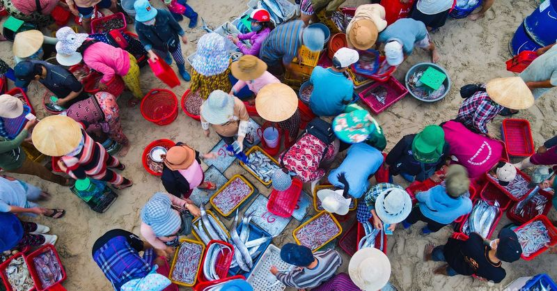
Khám phá 4 khu chợ miền Trung 'không cần nhìn giá', có nơi 2.000-5.000 đồng/món 🔗 MOI
Chợ Giai Sơn, Đắk Lắk Chợ Giai Sơn, nằm tại xã Tuy An Nam, tỉnh Đắk Lắk (trước đây là xã An Mỹ, huyện Tuy An, Phú Yên). Nơi đây được nhiều du khách gọi là "chợ dân sinh rẻ nhất Việt Nam" hay "khu chợ
Doanh thu 1,7 tỷ đồng, chủ quán ăn vẫn lỗ gần 700 triệu vì một sai lầm dễ mắc 🔗 MOI
Năm 2024, anh Quân (35 tuổi, tên nhân vật đã thay đổi) quyết định mở quán ăn . Anh thuê một căn nhà 3 tầng tại Cầu Giấy với giá 45 triệu đồng/tháng. Chủ nhà yêu cầu thanh toán 6 tháng tiền thuê cùng 2
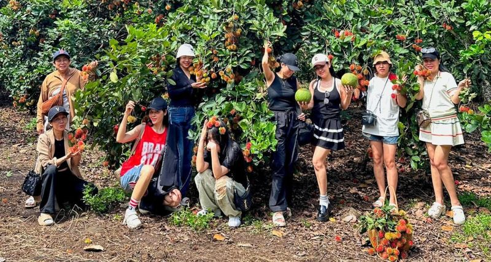
Mỗi năm chỉ có một mùa, du khách ùn ùn đến Đồng Nai tự tay hái trái chín cây 🔗 MOI
Đầu tháng 6, nhiều nhà vườn tại phường Bình Lộc (TP Đồng Nai) bắt đầu nhộn nhịp đón khách đến tham quan, trải nghiệm. Không chỉ thưởng thức trái cây tại chỗ, du khách còn hào hứng tự tay hái trái, gặp
Ukraine tuyên bố UAV kiểm soát một phần tuyến đường tới Crưm 🔗 MOI
UAV Ukraine khóa mục tiêu các phương tiện vận chuyển của Nga. Ảnh: Trung đoàn Lực lượng Đặc nhiệm số 3 của Ukraine Tờ Kyiv Independent dẫn thông báo ngày 6/6 của quân đội Ukraine viết, UAV của nước nà
Chiến sự Trung Đông ngày 100: Mỹ, Iran tấn công mạnh cơ sở của nhau; Lầu Năm Góc lo ngại hoạt động gián điệp của Israel? 🔗 MOI
(PLO)- Tình hình Trung Đông tiếp tục nóng; Mỹ, Iran tấn công qua lại, đe dọa thỏa thuận ngừng bắn; Bộ trưởng Nội vụ Pakistan đến Iran; Lầu Năm Góc được cho là đã nâng mức cảnh báo về hoạt động gián đi
Viện trưởng Viện Phim Việt Nam Lê Thị Hà: Điện ảnh luôn là cầu nối văn hóa giữa các quốc gia 🔗 MOI
Viện trưởng Viện Phim Việt Nam Lê Thị Hà tặng các ấn phẩm của Viện Phim Việt Nam cho ngài Johan Ndisi, Đại sứ Thụy Điển tại Việt Nam. Ảnh: BTC PHÓNG VIÊN: “Tuần phim thiếu nhi Việt Nam - Thụy Điển” do
Toàn cảnh thế giới 7/6: Ông Netanyahu đổi ý, giao tranh Israel và Liban lại nóng 🔗 MOI
Bản tin 60s toàn cảnh thế giới tuần này gồm những tin chính sau: Israel hoãn thông qua thỏa thuận ngừng bắn với Liban. Hơn 200 người thiệt mạng khi Mỹ mở chiến dịch tấn công tàu nghi buôn ma túy. Triề
'Doanh nghiệp một người' - Phần 1: 'Vỏ pháp lý' mới cho cá nhân kinh doanh? 🔗 MOI
(KTSG) - Khi một người có thể kinh doanh chỉ với một chiếc điện thoại và tài khoản ngân hàng, câu hỏi không còn là họ có cần một mô hình doanh nghiệp hay không, mà là pháp luật sẽ nhìn họ như thế nào.
Người chú 'siêu thiên tài' của ông Trump 🔗 MOI
"Chú tôi, tiến sĩ John Trump, là một người vĩ đại, từng tốt nghiệp Học viện Công nghệ Massachusetts (MIT) và giảng dạy ở đây trong thời gian dài kỷ lục. Ông ấy là một siêu thiên tài", Tổng thống Mỹ Do
Nhạc sĩ Đức Trí đính chính một dấu phẩy trong nhạc Trịnh Công Sơn, Cẩm Vân và Thanh Lam bùng nổ 🔗 MOI
Các nghệ sĩ hòa giọng Nối vòng tay lớn - Ảnh: ĐẬU DUNG Đêm nhạc Đồng dao hòa bình diễn ra tại Nghệ An tối 6-6, nằm trong chuỗi sự kiện tưởng nhớ 25 năm hành trình Nhớ Trịnh Công Sơn, nối tiếp từ TP.HC
Tập đoàn VNG lên kế hoạch có lãi trở lại sau 4 năm, không chia cổ tức 🔗 MOI
Tập đoàn VNG đặt mục tiêu năm nay lãi trước thuế từ 300 - 450 tỷ đồng, chấm dứt giai đoạn lỗ kéo dài 4 năm liên tiếp. CTCP Tập đoàn VNG (UpCOM: VNZ) vừa công bố tài liệu họp đại hội đồng cổ đông (ĐHĐC
Huy động nguồn lực cho tăng trưởng xanh 🔗 MOI
Pháp luật Bài viết phân tích tiềm năng, thực trạng và định hướng phát triển các mô hình du lịch biển tại Việt Nam nhằm hướng tới một nền kinh tế biển xanh, bền vững. Với đường bờ biển dài hơn 3.260 km

Chính phủ với công dân 🔗 MOI
07/06/2026 (Chinhphu.vn) - Bà Nguyễn Linh (Hà Nội) đã đăng ký hộ kinh doanh mã ngành 8559 và có 2 lớp với sĩ số 3 - 4 học sinh, được phụ huynh nhờ kèm để thi... 06/06/2026 (Chinhphu.vn) - Thí sinh Duy
Mãn nhãn màn biểu diễn của cảnh sát đặc nhiệm, kỵ binh... tại Đại nội Huế 🔗 MOI
Tối 6.6, lễ khai mạc Hội thao quân sự, võ thuật và thể thao Công an nhân dân năm 2026 khu vực 2 diễn ra tại Quảng trường Ngọ Môn ( Đại nội Huế ), thu hút hàng ngàn người dân và du khách tham dự. Hội t
Bryan Johnson và hành trình kéo dài tuổi thọ bằng công nghệ và dữ liệu sinh học 🔗 MOI
Ăn 32 kg rau mỗi tháng, uống 61 viên thuốc mỗi ngày, cựu CEO 45 tuổi dùng thuật toán để “bẻ cong” giới hạn sinh học, kéo dài tuổi thọ? Minh Ngọc | 07/06/2026 07:51 AM | Công nghệ Theo dõi Cafebiz.vn t
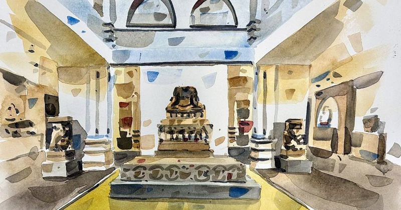
Bảo tàng Điêu khắc Chăm Đà Nẵng mọc lên từ bãi cổ vật giữa phố 🔗 MOI
Trước khi có tòa nhà vàng nhạt quen mắt trên đường 2 tháng 9 (dưới chân cầu Rồng) ngày nay, cuối thế kỷ 19, nơi này từng là "vườn tượng Tourane". Người Pháp gom tượng Chăm từ Trà Kiệu, Khương Mỹ về đặ
Việt Nam và TFO Canada hướng tới quan hệ đối tác thương mại chiến lược 🔗 MOI
Facebook Twitter Lưu bài viết Bản in Copy link Sau hơn một thập kỷ hợp tác trong lĩnh vực xúc tiến thương mại và hỗ trợ doanh nghiệp, quan hệ giữa Cục Xúc tiến thương mại (Vietrade) thuộc Bộ Công Thươ
Kịch bản để U19 Việt Nam vào bán kết giải Đông Nam Á 2026 🔗 MOI
Tại bảng A, U19 Việt Nam nắm quyền tự định đoạt số phận trước lượt đấu cuối. Cụ thể, đoàn quân của HLV Yutaka Ikeuchi đang đứng đầu bảng với 6 điểm và hiệu số bàn thắng/bại +8. Bám sát phía sau là U19
Bước chuyển bền vững cho ngành hàng thủy sản chiến lược 🔗 MOI
Giá cá tra nguyên liệu đang duy trì ở mức cao nhất trong nhiều năm trở lại đây, mang lại lợi nhuận đáng kể cho người nuôi, tạo động lực cho hoạt động chế biến, xuất khẩu thủy sản. Tuy nhiên, để hướng
Ban ngày là nghiên cứu sinh tiến sĩ, buổi tối chạy xe ôm công nghệ 🔗 MOI
Không chờ thời điểm hoàn hảo để bắt đầu Theo NDTV , Deepak Pandey gây chú ý sau khi chia sẻ lịch trình làm việc dày đặc của mình trên Instagram. Ngoài công việc văn phòng giờ hành chính, anh còn chạy
Chủ tịch VNG Lê Hồng Minh giải đáp thắc mắc về giá cổ phiếu, hé lộ lộ trình chuyển sàn 🔗 MOI
VNZ: Giá hiện tại Thay đổi Xem hồ sơ doanh nghiệp TIN MỚI Tại phiên thảo luận của Đại hội, vấn đề thị giá và tính thanh khoản của mã cổ phiếu VNZ đã trở thành tâm điểm thu hút sự quan tâm đặc biệt từ
Minh bạch quảng cáo: Luật chơi mới của thị trường 🔗 MOI
Chấm dứt những danh hiệu tự phong Điểm thay đổi gây chú ý nhất của Thông tư 12/2026/TT-BVHTTDL là quy định về việc sử dụng các từ ngữ mang tính khẳng định tuyệt đối như "nhất", "duy nhất", "tốt nhất",
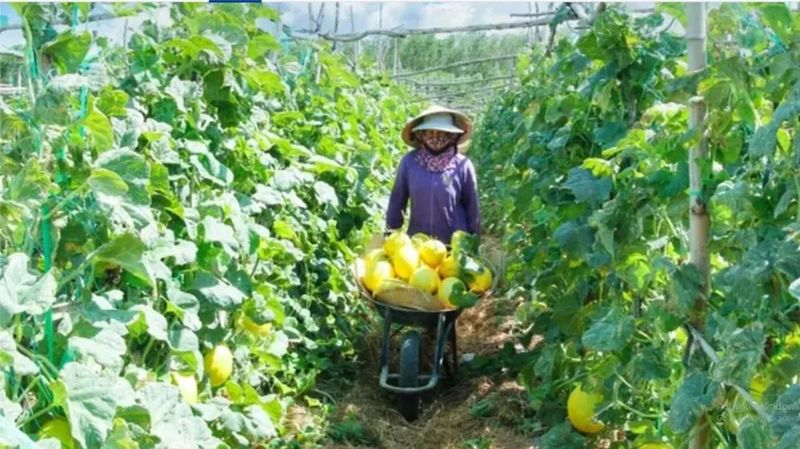
Từ người sản xuất trở thành chủ thể phát triển 🔗 MOI
Trong bối cảnh đó, nông nghiệp tiếp tục được Đảng và Nhà nước xác định là trụ đỡ của nền kinh tế. Những năm gần đây, xuất khẩu nông - lâm - thủy sản liên tục lập các mốc kỷ lục mới. Sản phẩm của nông
Đường hư hỏng, doanh nghiệp ở TP.HCM xin tự bỏ tiền làm mới toàn tuyến 🔗 MOI
Sẵn sàng bỏ 100% kinh phí làm đường Liên quan đến những phản ánh về tình trạng hạ tầng giao thông tại tuyến đường Đê Bao thuộc phường Phú An ( TP.HCM ), đại diện các doanh nghiệp hoạt động trên địa bà
Rowing biển Việt Nam giành 2 huy chương Vàng tại Giải vô địch châu Á 2026 🔗 MOI
Facebook Twitter Lưu bài viết Bản in Copy link Đội tuyển rowing biển Việt Nam đã thi đấu thành công tại Giải vô địch rowing biển châu Á 2026 diễn ra tại Thái Lan từ ngày 4-7/6, giành 2 huy chương Vàng
Máy tính tự vận hành mở ra tương lai mới 🔗 MOI
Tuy nhiên, nỗ lực này phần lớn chưa đạt được kỳ vọng, khi các trợ lý ảo như Alexa và Siri chủ yếu chỉ được sử dụng cho những nhiệm vụ đơn giản như đặt báo thức hoặc phát nhạc. Điều đó có thể sẽ sớm th
Mở toàn bộ nút giao cao tốc TP.HCM - Long Thành với Biên Hòa - Vũng Tàu 🔗 MOI
Chiều tối 6.6, nút giao Long Thành, kết nối cao tốc TP.HCM - Long Thành với cao tốc Biên Hòa - Vũng Tàu đã chính thức được mở toàn bộ. Nút giao Long Thành vào tối 6.6 ẢNH: LÊ LÂM Nút giao Long Thành t
Xoắn dây tinh và thời gian vàng cấp cứu 🔗 MOI
Bộ Tài chính đồng hành cùng doanh nghiệp nhỏ và vừa trên hành trình chuyển đổi kép 🔗 MOI
Chuyển đổi số Trong bối cảnh tiêu chuẩn ESG, yêu cầu Net Zero và sức ép cạnh tranh toàn cầu ngày càng gia tăng, phần lớn doanh nghiệp Việt Nam, đặc biệt là doanh nghiệp nhỏ và vừa đang đối mặt với kho
Kết thúc câu chuyện cổ tích của Chwalinska, Andreeva đoạt Grand Slam đầu tiên trong sự nghiệp 🔗 MOI
Mirra Andreeva với danh hiệu Grand Slam đầu tiên trong sự nghiệp - Ảnh: EPA Việc tay vợt người Ba Lan Maja Chwalinska vào đến chung kết là câu chuyện cổ tích của quần vợt. Nhưng đáng tiếc cô đã không

Báo cáo tài chính doanh nghiệp 🔗 MOI
Tổng tài sản của VNPT đến cuối năm 2025 đạt 119.610,3 tỷ đồng, tăng gần 6%. Trong đó, hàng tồn kho tăng hơn 3 lần lên 4.711,4 tỷ đồng, chủ yếu do nguyên liệu, vật liệu và chi phí sản xuất kinh doanh d
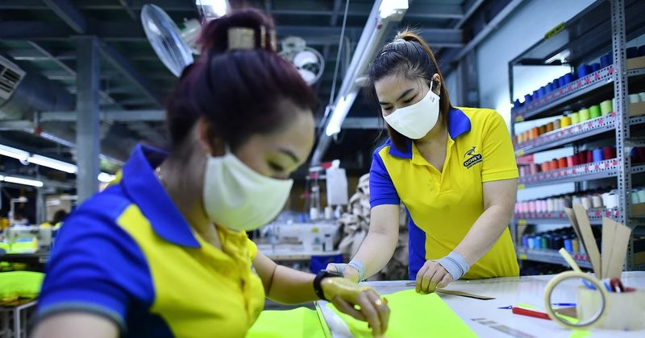
Doanh nghiệp phía Nam ‘khát’ lao động 🔗 MOI
“Trải thảm” chờ lao động Ngày 6/6, dọc các tuyến đường trong Khu công nghiệp Tân Tạo (phường Tân Tạo), Khu chế xuất Tân Thuận (phường Tân Thuận), Khu chế xuất Linh Trung (phường Linh Xuân)…, những tấm
Ngắm cầu gần 10.000 tỷ xây nhanh bậc nhất Hà Nội, dự kiến hoàn thành trong chưa đầy 2 năm, kết nối đại đô thị của Vinhomes và Sun Group 🔗 MOI
TIN MỚI Sau hơn nửa năm kể từ ngày khởi công, cầu Hồng Hà hạng mục quan trọng thuộc dự án Vành đai 4 - Vùng Thủ đô đang dần hiện rõ hình hài với hàng loạt trụ cầu vươn lên giữa sông Hồng. Công trình b
Thư gửi Đại hội Đoàn toàn quốc: Khơi dậy sức trẻ bằng đổi mới sáng tạo 🔗 MOI
Đồng hành với thanh niên trong kinh tế số Là cán bộ Đoàn gắn bó với cơ sở, tôi nhận thấy người trẻ hôm nay không chỉ cần môi trường cống hiến mà còn cần những giải pháp thiết thực để phát triển kinh t
10 nguyên tắc vàng về vệ sinh an toàn thực phẩm 🔗 MOI
Facebook Twitter Lưu bài viết Bản in Copy link Ngày An toàn Thực phẩm Thế giới diễn ra vào ngày 7/6 hằng năm, do Tổ chức Y tế Thế giới (WHO) và Tổ chức Lương nông Liên hợp quốc (FAO) đồng khởi xướng.
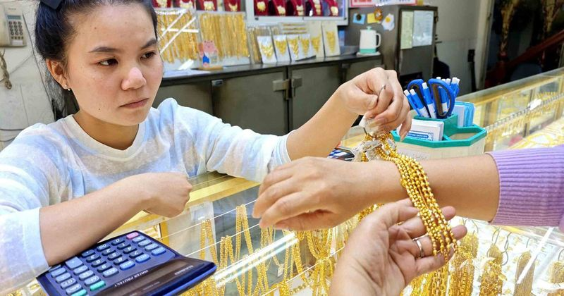
Giá vàng giảm không phanh, bắt đáy cũng lỗ nặng 🔗 MOI
Giá trượt xuống dưới 150 triệu đồng/lượng Lỗ càng thêm lỗ, đó là nhận xét của những người mua vàng từ đầu năm đến nay khi giá rơi xuống mức thấp nhất trong năm. Giá vàng miếng SJC ngày 6.6 giảm thêm 3
Câu chuyện về ánh sáng của thành phố mang tên Bác 🔗 MOI
Chuyến bay từ thủ đô Hà Nội hạ cánh xuống sân bay Tân Sơn Nhất khoảng 9 giờ tối. Đã gần 10 năm nay, tôi chưa quay trở lại thành phố này. Bước ra khỏi sân bay, tôi đã chuẩn bị sẵn tinh thần được diện k
Tin tức đặc biệt trên báo in Thanh Niên 7.6.2026 🔗 MOI
TP.HCM thí điểm công chức làm việc tại nhà Sở Nội vụ TP.HCM đang đề xuất thí điểm cho công chức làm việc từ xa ẢNH: NGỌC DƯƠNG Với sự hỗ trợ của công nghệ, TP.HCM dự kiến cho 30% công chức khối tham m
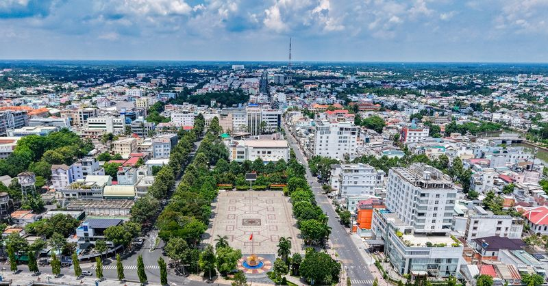
Mua nhà ở xã hội, đóng gần 1,6 tỷ đồng mới biết không đủ điều kiện 🔗 MOI
Nộp gần đủ tiền mới biết không đủ điều kiện mua nhà Theo trình bày của bà T. (ngụ tỉnh Vĩnh Long), năm 2020, bà ký hợp đồng mua bán căn hộ nhà ở xã hội với Công ty K. Căn hộ có diện tích 86m2, giá bán
Hành trình 10 năm chữa hiếm muộn và thời khắc hai vợ chồng ôm nhau bật khóc 🔗 MOI
Vợ chồng anh Nguyễn Văn Huyên và chị Trần Thị Vịnh (quê Hưng Yên) kết hôn năm 2013. Giống như bao đôi vợ chồng trẻ khác, họ mong sớm có một đứa con để căn nhà nhỏ thêm tiếng cười. Thế nhưng một năm, r
Khai mạc Đại hội Hội Nông dân Việt Nam lần thứ IX 🔗 MOI
Đại hội Hội Nông dân VN lần thứ IX, nhiệm kỳ 2026 - 2031 có chủ đề: Đoàn kết - Dân chủ - Đột phá - Hợp tác - Phát triển, diễn ra từ ngày 7 - 8.6, có nhiệm vụ đánh giá tình hình, kết quả công tác Hội v
Gia tộc nào giàu nhất thế giới hiện nay? 🔗 MOI
1. Gia tộc nào giàu nhất thế giới? Hermes (Pháp) 0% Thomson (Canada) 0% Al Saud (Ả Rập Xê Út) 0% Walton (Mỹ) 0% Chính xác Theo Bloomberg, năm 2025, 25 gia tộc giàu nhất hành tinh sở hữu tổng tài sản l
Hồng Ánh và hành trình không giới hạn với nghệ thuật 🔗 MOI
Phim "Mesdames Thanh Sắc" có sự tham gia của Hồng Ánh chính thức ra rạp, phục vụ khán giả từ ngày 19-6. Phim do Thắng Vũ đạo diễn, Hồng Ánh phối diễn cùng Thanh Hằng, Lương Thế Thành… Khao khát chung
Đồng Nai: Cầu tạm Mã Đà đã thông xe 🔗 MOI
Sau nhiều thập kỷ bị chia cắt bởi cầu Mã Đà cũ bị đánh sập từ thời chiến tranh, bắc qua dòng suối Mã Đà, đến tháng 12.2025, khu vực tỉnh Bình Phước cũ và tỉnh Đồng Nai cũ (nay là thành phố Đồng Nai) m
Hiểu đúng thí điểm vùng phát thải thấp từ 1-7: Không cấm hết xe máy xăng như lời đồn 🔗 MOI
Chi tiết khu vực dự kiến thí điểm vùng phát thải thấp tại Hà Nội từ ngày 1-7-2026 - Ảnh: VTV Từ ngày 1-7, Hà Nội bắt đầu triển khai thí điểm vùng phát thải thấp (Low Emission Zone - LEZ) tại 9 phường
quản lý ngân sách hiệu quả, phục vụ chính quyền địa phương 2 cấp 🔗 MOI
Tài chính Không chỉ tinh gọn, sắp xếp bộ máy và kịp thời tham mưu, ban hành, triển khai các văn bản hướng dẫn về kế toán phục vụ mô hình chính quyền địa phương 2 cấp, tham gia các đoàn công tác cùng B
Lôi Viễn Quang vào top 10 Man of the World 2026, đại diện Philippines đăng quang 🔗 MOI
Top 5 Man of the World 2026 - Ảnh: Missosology Tối 6-6, đêm chung kết cuộc thi nam vương Man of the World 2026 diễn ra tại Philippines. Trải qua các phần thi hấp dẫn, người mẫu Oliver Eugen Kretz - đạ
Indonesia viết lại công thức làm du lịch: Ẩm thực, cộng đồng, bền vững 🔗 MOI
Các thiếu niên địa phương biểu diễn múa truyền thống tại đền Besakih ở phía Đông của Bali - Ảnh: TRẦN PHƯƠNG Những thông điệp được đưa ra tại Hội chợ du lịch quốc tế Bali & Beyond Travel Fair 2026 (d
Làm sao giữ mùa hè vui khỏe cho học sinh? 🔗 MOI
Học sinh tham gia hoạt động ngoài trời ở phường Long Phước, TP.HCM - Ảnh: T.T.D. Câu hỏi đặt ra khi hè về và phụ huynh lại lo chọn nơi gửi con, nơi cho con học hè. Có những trẻ mùa hè "chạy sô" học đủ
Lịch trực tiếp U19 Đông Nam Á ngày 7-6: Việt Nam đấu Indonesia 🔗 MOI
Lịch trực tiếp U19 Đông Nam Á ngày 7-6: Việt Nam đấu Indonesia - Đồ họa: AN BÌNH Lúc 20h ngày 7-6, lượt trận cuối bảng A Giải U19 Đông Nam Á 2026 sẽ diễn ra hai cặp đấu: U19 Việt Nam - U19 Indonesia v

Góc chuyên gia & nhà quản lý 🔗 MOI
Bộ Tài chính đã và đang nỗ lực không ngừng để cải cách thủ tục hành chính, bảo đảm các lĩnh vực thuộc phạm vi quản lý nhà nước của Bộ Tài chính luôn thông suốt theo mô hình chính quyền địa phương 2 cấ
Đổi mới công tác xây dựng và thi hành pháp luật: Dấu ấn 1 năm thực hiện Nghị quyết số 66-NQ/TW 🔗 MOI
Tài chính Trong tiến trình phát triển đất nước, cải cách thể chế luôn được xác định là khâu đột phá để khơi thông nguồn lực và nâng cao năng lực cạnh tranh quốc gia. Trên nền tảng những chuyển động mạ
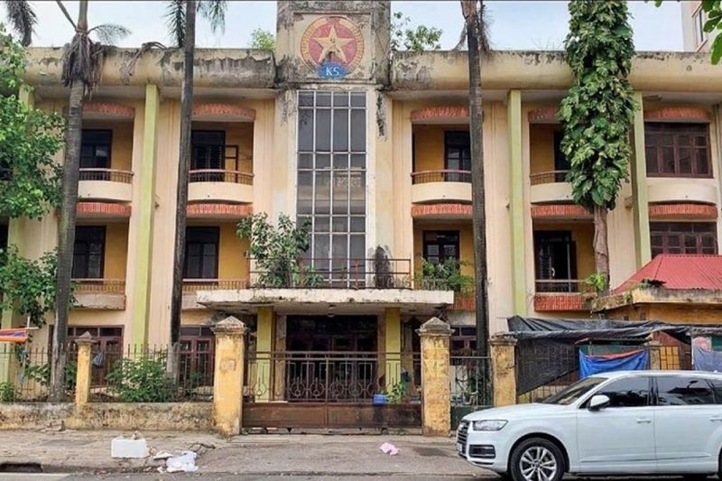
nhà đất công đôi dư 🔗 MOI
Tài chính Đằng sau hàng chục nghìn cơ sở nhà, đất công chưa được xử lý dứt điểm không chỉ là câu chuyện thủ tục hay hồ sơ pháp lý, mà còn là tâm lý e ngại trách nhiệm trong quá trình thực thi. Mệnh lệ

Hoạt động của Lãnh đạo Bộ Tài chính 🔗 MOI
Bộ Tài chính đã và đang nỗ lực không ngừng để cải cách thủ tục hành chính, bảo đảm các lĩnh vực thuộc phạm vi quản lý nhà nước của Bộ Tài chính luôn thông suốt theo mô hình chính quyền địa phương 2 cấ
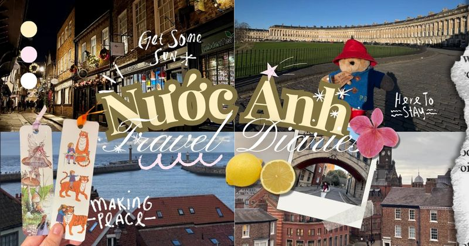
24 giờ trải nghiệm làm quý tộc "chanh sả", săn ma và gom nhiệm màu dọc nước Anh 🔗 MOI
Một ngày làm quý tộc tại công viên hoàng gia Nằm cách ga Paddington của thủ đô London hai giờ đi tàu, thành phố Bath là một trong những trạm dừng chân đáng thử nếu bạn muốn “nhập vai” làm quý tộc Anh
Bồ Đào Nha gặp rắc rối lớn trước World Cup 2026 🔗 MOI
Tình huống tranh cãi xảy ra ở phút bù giờ hiệp một. Felipe Faundez lần lượt va chạm với Leao và Joao Cancelo. Cancelo phản ứng mạnh với Faundez của Chile.
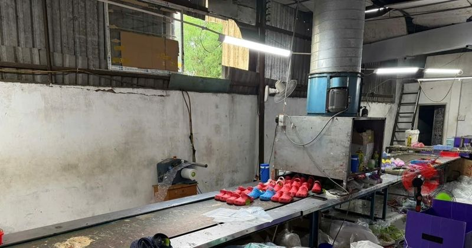
Đột kích xưởng sản xuất, buôn bán dép giả các thương hiệu nổi tiếng quy mô lớn 🔗 MOI
Clip Công an TPHCM triệt phá xưởng sản xuất hơn 23.000 đôi dép giả Nike, Adidas, Gucci. Ngày 7/6, Phòng Cảnh sát Kinh tế Công an TPHCM cho biết vừa triệt phá một đường dây sản xuất, buôn bán dép giả c
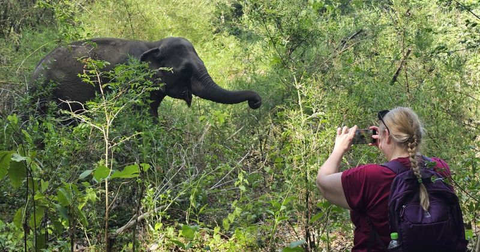
Theo dấu chân voi: Ngày những chiếc bành voi nhà biến mất ở Buôn Đôn 🔗 MOI
Không còn bành cưỡi, không có những tiếng thúc giục hay những vòng quay phục vụ khách du lịch như trước đây. Giờ đây, hành trình ấy chỉ đơn giản là theo dấu chân voi giữa môi trường sống gần với tự nh
Kịch bản đưa U19 Việt Nam vào bán kết giải U19 Đông Nam Á 2026 🔗 MOI
Facebook Twitter Lưu bài viết Bản in Copy link Cuộc cạnh tranh vé vào chơi bán kết giải U19 Đông Nam Á 2026 (tổ chức tại Indonesia) đang trở nên căng thẳng hơn bao giờ hết. Sau hai lượt trận, 5 đội bó
Dấu ấn từ xây dựng điểm kho “kiểu mẫu” của Chi cục Dự trữ Nhà nước khu vực I 🔗 MOI
Hưởng ứng phong trào thi đua xây dựng điểm kho “An toàn - Xanh - Sạch - Đẹp” do Cục Dự trữ Nhà nước phát động, thời gian qua, các điểm kho trực thuộc Chi cục Dự trữ Nhà nước khu vực I đã tích cực triể
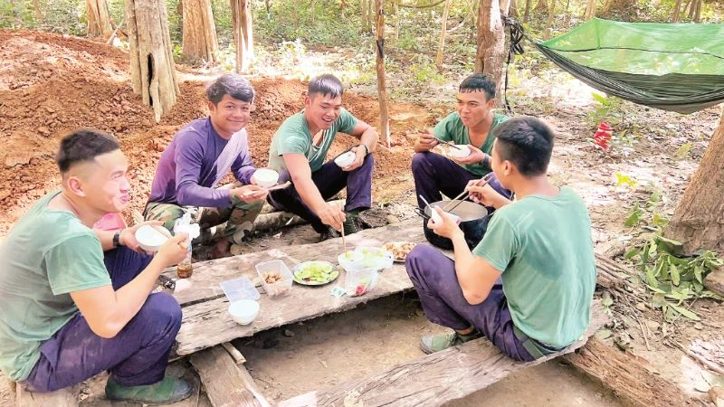
Bài 2: Mệnh lệnh từ trái tim 🔗 MOI
Đến nay, cả nước còn khoảng 175.000 liệt sĩ chưa được tìm thấy hài cốt, trong khi những nhân chứng cuối cùng đang dần đi hết cuộc đời, dấu tích chiến trường xưa ngày càng mờ nhạt. “ Chiến dịch 500 ngà
Vũ điệu tìm lại sự sống của cô gái 4 lần tái phát ung thư 🔗 MOI
Câu chuyện về Hàn Dịch Phê ở thành phố Từ Châu, tỉnh Giang Tô, vượt qua nghịch cảnh để tỏa sáng trên sân khấu bằng những vũ điệu uyển chuyển đang lay động cộng đồng mạng Trung Quốc. Trong các video tự
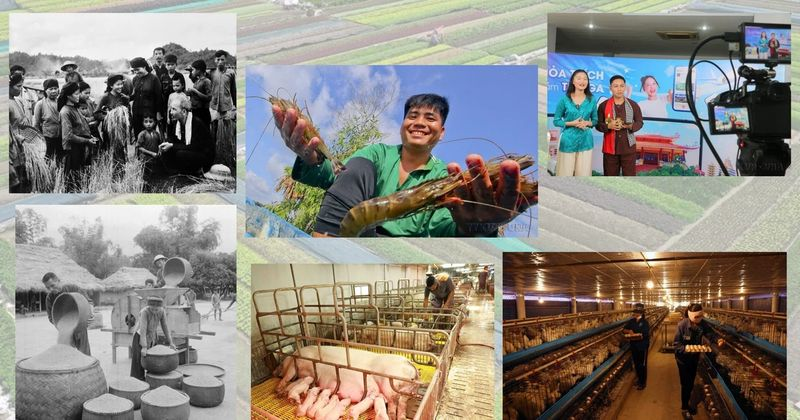
Dấu ấn 96 năm Hội Nông dân Việt Nam trên hành trình phát triển đất nước 🔗 MOI
Facebook Twitter Lưu bài viết Bản in Copy link Từ những tổ chức nông dân cách mạng đầu tiên trong phong trào đấu tranh giải phóng dân tộc đến một tổ chức Hội ngày càng vững mạnh, hiện đại, Hội Nông dâ
Tăng Phúc đã dám bước đi 🔗 MOI
Điểm nhấn của SUN SONG Tăng Phúc đã có một đêm nhạc thành công "Mini concert SUN SONG: The New Beginning" của Tăng Phúc, diễn ra tối 6-6 tại Nhà thi đấu Nguyễn Du (TP HCM) không chỉ đánh dấu cột mốc 1
Dạy thêm nhóm nhỏ có cần đăng ký kinh doanh? 🔗 MOI
Về vấn đề này, Bộ Giáo dục và Đào tạo trả lời như sau: Thông tư số 29/2024/TT-BGDĐT ngày 30/12/2024 quy định về dạy thêm, học thêm và Thông tư số 19/2026/TT-BGDĐT ngày 31/3/2026 sửa đổi, bổ sung Thông

5 tình trạng sức khỏe có thể gây khô mắt kéo dài 🔗 MOI
Khô mắt xảy ra khi mắt không sản xuất đủ nước mắt hoặc nước mắt bốc hơi quá nhanh. Ngoài cảm giác cộm xốn, châm chích, người bệnh có thể bị đỏ mắt, nhạy cảm với ánh sáng, nhìn mờ hoặc chảy nước mắt số
Những kỷ vật và tư liệu vô giá về Chủ tịch Hồ Chí Minh 🔗 MOI
"M ỘT VIÊN GẠCH HỒNG, B ÁC CHỐNG LẠI CẢ MỘT MÙA BĂNG GIÁ" Liên tục trong hai năm gần đây, Bảo tàng Hồ Chí Minh - chi nhánh TP.HCM nhận được nhiều hiện vật quý hiếm về Bác do ông Philippe Chaplain, Chủ
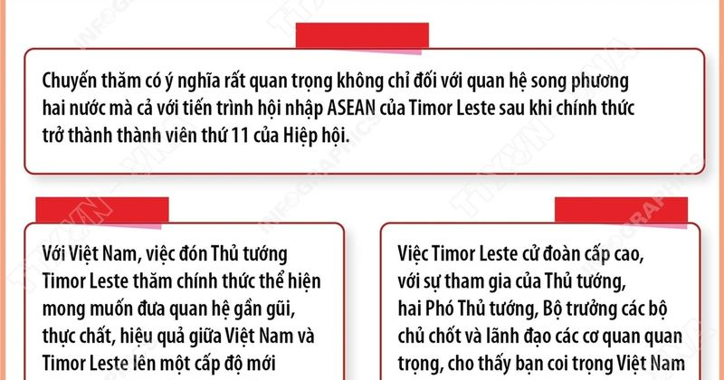
Quan hệ hữu nghị hợp tác Việt Nam-Timor-Leste 🔗 MOI
Facebook Twitter Lưu bài viết Bản in Copy link Nhận lời mời của Thủ tướng Chính phủ nước Cộng hòa xã hội chủ nghĩa Việt Nam Lê Minh Hưng, Thủ tướng nước Cộng hòa dân chủ Timor-Leste Kay Rala Xanana Gu
Quân khu 5 kiểm tra, nắm tình hình các đơn vị phía tây Quảng Ngãi 🔗 MOI
Làm việc với Ban Chỉ huy Quân sự các xã, Thiếu tướng Lương Đình Chung yêu cầu cấp ủy, chỉ huy các đơn vị tiếp tục tham mưu hiệu quả cho cấp ủy, chính quyền địa phương triển khai thực hiện nhiệm vụ quố
Sắc vóc bạn gái Neymar 🔗 MOI
Bruna Biancardi sinh con gái thứ hai được gần một năm, con gái đầu lòng của cô và Neymar lên ba tuổi. Cả nhà thường phối trang phục đồng điệu phong cách, màu sắc mỗi dịp lễ, ngày kỷ niệm. Bruna Bianca
Endrick ghi bàn cho Brazil, lập tức cảm ơn HLV Ancelotti 🔗 MOI
HLV Ancelotti đã tìm ra đội hình chính thức, nhưng hàng thủ Brazil vẫn đầy nỗi lo Trong trận giao hữu cuối trước khi bước vào chiến dịch chinh phục ngôi vô địch World Cup 2026, trừ Neymar vắng mặt, HL
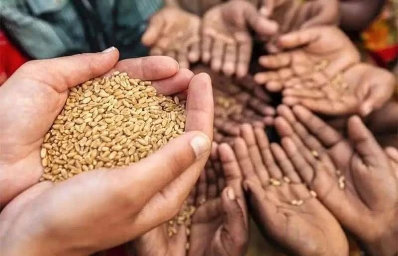
Chung tay giúp đỡ, đẩy lùi đói nghèo 🔗 MOI
Trong khi các tổ chức nhân đạo phải gồng mình trước “sức ép kép” là nhu cầu cứu trợ tăng mạnh và chi phí vận chuyển, hậu cần, cung ứng thực phẩm leo thang, thì nhiều khu vực trên thế giới cũng đã bị đ

An sinh linh hoạt, công bằng 🔗 MOI
Có người cho rằng đây là bước tiến cần thiết để bảo vệ người lao động (NLĐ) trong nền kinh tế số. Ngược lại, không ít ý kiến lo ngại việc mở rộng diện đóng BHXH sẽ tạo thêm gánh nặng cho những người v
Lịch thi đấu bóng đá hôm nay 7/6: U19 Việt Nam đấu Indonesia, vòng cuối V-League 🔗 MOI
Lịch thi đấu vòng cuối V-League 2025/26 Lịch thi đấu bóng đá hôm nay NGÀY GIỜ TRẬN ĐẤU TRỰC TIẾP GIẢI VÔ ĐỊCH U19 ĐÔNG NAM Á 2026 07/06 20:00 U19 Việt Nam vs U19 Indonesia TV360 07/06 20:00 U19 Timor-
Từ 1/7, giả mạo tài khoản Facebook để tung tin giả có thể bị phạt tới 50 triệu đồng 🔗 MOI
Trong bối cảnh mạng xã hội ngày càng trở thành kênh thông tin phổ biến, tình trạng giả mạo tài khoản cá nhân, fanpage, hội nhóm để phát tán tin giả, bôi nhọ người khác hoặc tạo dựng thông tin thất thi
Chi Pu và dự án album lớn nhất sự nghiệp 🔗 MOI
Chi Pu và hành trình thiền định để đối thoại với chính mình Chi Pu trong sản phẩm mở màn cho dự án album lớn nhất sự nghiệp Không chỉ đơn thuần là một sản phẩm âm nhạc mới, "Mirror" còn được xem là "p
Bruno Fernandes ghi bàn, Bồ Đào Nha thắng Chile trước thềm World Cup 🔗 MOI
Điểm nhấn của trận đấu có vẻ không phải là ba bàn thắng mà là hai tấm thẻ đỏ mà trọng tài dành cho Rafael Leao (Bồ Đào Nha) và và Ivan Roman (Chile) cuối hiệp một. Cả hai lao vào tranh cãi sau một tìn
Lịch thi đấu AVC Cup 2026 ngày 7-6 🔗 MOI
HLV Nguyễn Tuấn Kiệt và các học trò sẽ tiếp tục thi đấu trước đội Hongkong (Trung Quốc) tại ngày 7-6. Ảnh: AVC Hôm nay, đội tuyển bóng chuyền nữ Việt Nam bước vào trận so tài thứ 2 của mình để gặp đối
Lịch thi đấu vòng 26 V-League 2025/26 mới nhất 🔗 MOI
Lịch thi đấu bóng đá V-League 2025/26 - Vòng 26 Vòng 26 V-League: Suất xuống hạng gọi tên ai? Ở vòng đấu hạ màn LPBank V-League 2025/26, cuộc đua trụ hạng giữa SHB Đà Nẵng, PVF-CAND và Becamex TP.HCM
Nguyễn Anh Minh gia nhập 'ông lớn' Arizona State sau mùa giải lịch sử tại Oregon State 🔗 MOI
Mùa giải lịch sử Anh Minh gia nhập Arizona State sau một năm thi đấu ấn tượng trong màu áo Oregon State dưới sự dẫn dắt của HLV Jon Reehoorn. Ngay trong mùa giải đầu tiên tại NCAA, tài năng trẻ của go
Củng cố tin cậy, thúc đẩy hợp tác, xây dựng Cộng đồng ASEAN vững mạnh 🔗 MOI
Nhận lời mời của Thủ tướng Lê Minh Hưng, Thủ tướng nước Cộng hòa Dân chủ Nhân dân Lào Sonexay Siphandone, Thủ tướng Vương quốc Campuchia Samdech Moha Borvor Thipadei Hun Manet, Thủ tướng Vương quốc Th
Kane ghi bàn duy nhất, tuyển Anh thắng nhạt New Zealand tại Florida 🔗 MOI
Sau đợt tập trung tháng 3 đáng thất vọng với hai trận không biết thắng, tuyển Anh chuẩn bị thực sự tích cực cho trận đấu với New Zealand, đối thủ kém hơn 80 bậc trên bảng xếp hạng FIFA. Nhập cuộc đầy
Kỹ sư Đức bỏ nghề, sang Việt Nam làm rể sau tiếng sét ái tình 🔗 MOI
Dịp Giáng sinh 2023, Fernando Barths sang Việt Nam dự đám cưới bạn thân. Trong bữa tiệc, anh chú ý đến cô nữ tiếp viên hàng không tên Hồng Diễm, 32 tuổi. Cùng lúc đó, cô gái Việt cũng ấn tượng với chà
Priscilla Chan yêu cầu tỷ phú Facebook ký thỏa thuận gì để "trói buộc trái tim"? 🔗 MOI
Giữa thung lũng Silicon đầy cám dỗ, nơi các tỷ phú thay người tình như thay áo, nhiều người từng ngỡ ngàng khi Mark Zuckerberg chọn cưới và chung thủy với một cô gái gốc Á có ngoại hình bình thường, ă
Giữa Kyoto, như nghe thời gian thở 🔗 MOI
Hành trình lần này với tôi không chỉ để khám phá hay thư giãn. Đó là cuộc gặp gỡ và đối thoại nội tâm khi được "chạm" vào các đặc trưng trong cội rễ văn hóa xứ sở mặt trời mọc. Những dòng chảy bất tận
Cuộc chiến tranh giành tài sản của người không con cái 🔗 MOI
Theo Báo cáo nguyện vọng sinh con của giới trẻ Trung Quốc, quốc gia này hiện có hơn 600.000 gia đình DINK (không sinh con). Tốc độ tăng trưởng của nhóm này rất cao tại các thành phố lớn như Thượng Hải

Khi bóng lăn qua lằn ranh pháp luật 🔗 MOI
Đứng trước bục khai báo, anh T. rơm rớm nước mắt thanh minh rằng mình chỉ mê bóng đá. Khởi đầu là một trận đấu cuối tuần, anh chỉ nhấp chuột bắt "kèo" 500.000 đồng với suy nghĩ "thua coi như mất chầu
Thủ tướng Timor-Leste Kay Rala Xanana Gusmao bắt đầu thăm chính thức Việt Nam 🔗 MOI
Tham gia Đoàn có: Phó Thủ tướng, Bộ trưởng Điều phối các vấn đề Kinh tế, Bộ trưởng Du lịch và Môi trường Francisco Kalbuady Lay; Phó Thủ tướng, Bộ trưởng Điều phối các vấn đề Xã hội, Bộ trưởng Phát tr
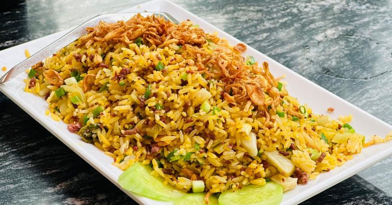
Người đàn ông xuất hiện triệu chứng bất thường sau khi ăn cơm rang 🔗 MOI
Theo truyền thông Trung Quốc, bệnh nhân được đưa tới bệnh viện ở Giang Môn trong tình trạng sốc, suy gan và suy thận. Các bác sĩ tại Khoa Hồi sức tích cực (ICU) đã phải khẩn trương cấp cứu để giữ tính
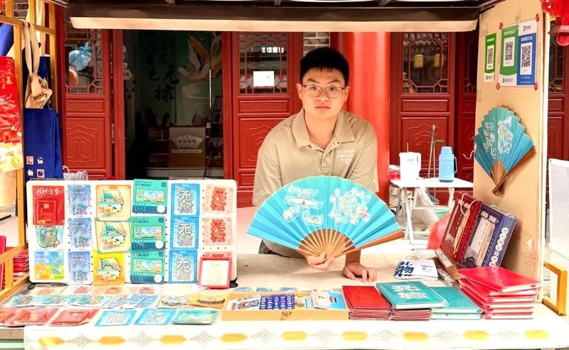
Di sản - nguồn cảm hứng sáng tạo 🔗 MOI
Lý Trạch Di bán các sản phẩm do chính anh thiết kế trước cửa hàng văn hóa và sáng tạo của mình tại huyện Vũ Đế. Ảnh: THX Tại một xưởng thiết kế nằm ở huyện Vũ Đế, tỉnh Sơn Đông, miền Đông Trung Quốc,
Vì một Việt Nam xanh 🔗 MOI
Môi trường trong yêu cầu phát triển mới Cùng với quá trình công nghiệp hóa, đô thị hóa và hội nhập quốc tế ngày càng sâu rộng, các vấn đề môi trường đang ngày càng tác động trực tiếp đến nhiều mặt đời
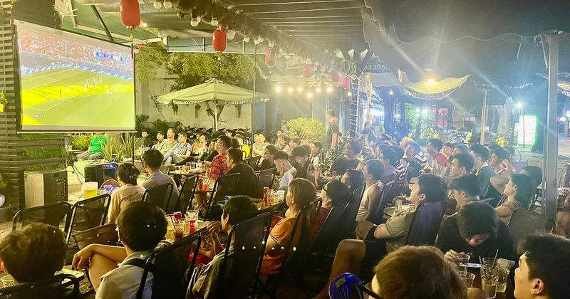
Xem World Cup 2026 sao cho không... mệt? 🔗 MOI
Người dân lựa chọn quán cà phê để theo dõi các trận đấu World Cup. Ảnh: DŨNG PHƯƠNG Nhịp sống đảo lộn theo trái bóng tròn Từ ngày 11-6 đến 19-7, World Cup 2026 sẽ chính thức khởi tranh tại 3 quốc gia
Thủ tướng Lào Sonexay Siphandone bắt đầu thăm chính thức Việt Nam 🔗 MOI
Tham gia Đoàn, có các đồng chí: Thongsalith Mangnomek, Ủy viên Bộ Chính trị, Phó Thủ tướng Chính phủ, Bộ trưởng Giáo dục và Thể thao; Khamlieng Outhakaisone, Ủy viên Bộ Chính trị, Phó Thủ tướng Chính

Kỳ quan mới 🔗 MOI
- Pisa B là gì? Italy có thêm tháp nghiêng nữa hả? - Có, nhưng tháp này không xây bằng đá mà bằng chai nhựa. Khách tới chụp ảnh check-in như tháp Pisa thật. - Nhưng lấy đâu ra đủ nhựa dựng cả cái tháp
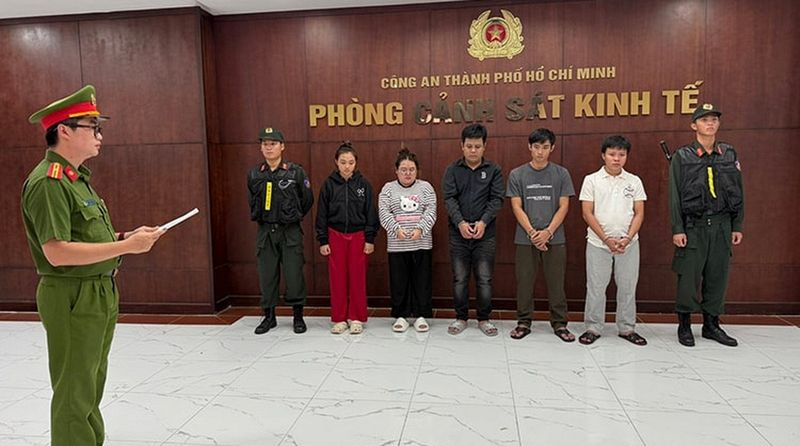
Ra lệnh bắt tạm giam chủ xưởng Vũ Thị Thu Thủy SN 1999 và nhiều nhân viên 🔗 MOI
TIN MỚI Ngày 6/6, Bộ Công an thông tin, Phòng Cảnh sát Kinh tế Công an TP. HCM đã triệt phá đường dây sản xuất, buôn bán dép giả các nhãn hiệu quy mô lớn, thu giữ hơn 23.000 đôi dép, khởi tố 05 bị can
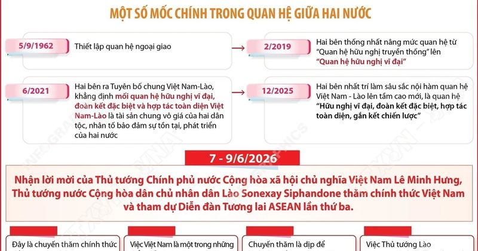
Quan hệ hữu nghị, đoàn kết đặc biệt, hợp tác toàn diện, gắn kết chiến lược Việt Nam-Lào 🔗 MOI
Facebook Twitter Lưu bài viết Bản in Copy link Nhận lời mời của Thủ tướng Chính phủ nước Cộng hòa xã hội chủ nghĩa Việt Nam Lê Minh Hưng, Thủ tướng nước Cộng hòa dân chủ nhân dân Lào Sonexay Siphandon
Phút quyết định giúp tránh phá dỡ căn nhà 66 m2 xây nhầm trên đất hàng xóm 🔗 MOI
"Nếu phải tháo dỡ căn nhà này thì tiếc quá", ông Hoàng nhớ lại suy nghĩ đầu tiên khi nghiên cứu hồ sơ vụ việc. Kể từ lúc nhận bản án dân sự của tòa, người đứng đầu Chi cục Thi hành án dân sự thị xã Ph
Siêu ứng dụng, siêu tiện lợi cho người dân 🔗 MOI
Giờ đây, VNeID đã âm thầm thay đổi thói quen của hàng triệu người dân, biến những thủ tục hành chính vốn đi liền với khái niệm "chờ đợi" trở nên gọn nhẹ chỉ bằng một cái chạm màn hình. Ứng dụng VNeID
Đà Nẵng: Bác sĩ tuyến trên về tận xã khám sức khỏe cho hơn 2.000 người dân 🔗 MOI
Trong 3 ngày (5 - 7/6), các bác sĩ Bệnh viện Việt – Hàn Đà Nẵng đã có mặt tổ chức khám sức khỏe, sàng lọc miễn phí cho 2.147 người dân xã Sơn Cẩm Hà, TP. Đà Nẵng. Các bác sĩ Bệnh viện Việt – Hàn Đà Nẵ
[Video] Dự báo thời tiết ngày 7/6/2026: Miền Bắc nắng nóng trở lại, Trung Bộ tiếp tục đợt nắng nóng gay gắt 🔗 MOI
Sau giai đoạn mưa dông liên tiếp, thời tiết Bắc Bộ đang chuyển sang trạng thái khô ráo hơn. Dưới tác động của hoàn lưu vùng áp thấp phía Tây phát triển trở lại về phía Đông Nam, khu vực trung du và đồ
Rắc rối thời nhạc sĩ 'nương tựa' 🔗 MOI
Giúp đỡ nhau trong lúc khó khăn Đó là trường hợp của ca khúc Đoạn buồn đêm mưa , một trong những ca khúc ăn khách của dòng nhạc xưa: “Đêm nay trên phố mưa tơi bời/Lòng nghe bao nhớ nhung đầy vơi/Làm s
Ranh giới giữa quấy rối tình dục và đùa giỡn 🔗 MOI
Từ "vỗ vai hỏi thăm" đến đơn tố cáo quấy rối Theo hồ sơ vụ án, ông L.V.M (35 tuổi, ở Hải Phòng) làm việc tại phòng nhân sự một công ty trong khu công nghiệp ở Bắc Ninh từ tháng 3.2022. Ông M. trình bà
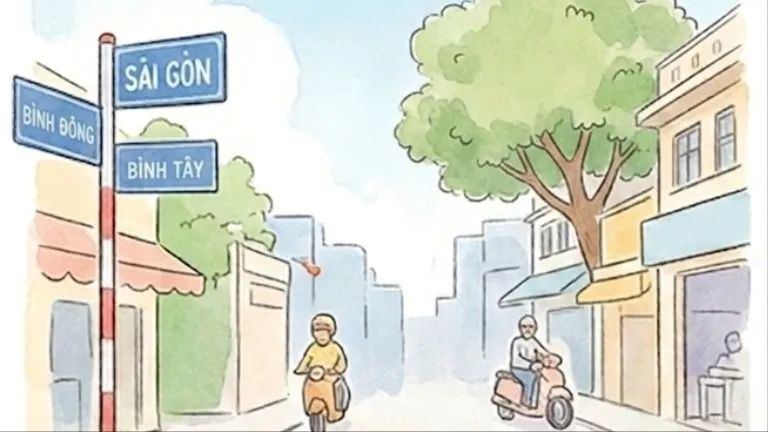
Thơ cho tuổi thơ 🔗 MOI
Tác giả Hồ Huy Sơn lại nhìn cuộc sống thị thành qua lăng kính trẻ thơ với Bình trà đá bằng thể thơ 3 chữ xuống dòng như những bài đồng dao; bình trà đá miễn phí xuất hiện nhiều nơi ở TPHCM giúp người
Tay chèo Diệp Thị Hương giành 3 HCV tại Giải vô địch trẻ và U23 canoeing châu Á 🔗 MOI
Facebook Twitter Lưu bài viết Bản in Copy link Theo thông tin từ Ban huấn luyện đội tuyển canoeing Việt Nam, vận động viên Diệp Thị Hương của Thể thao Công an nhân dân đã thi đấu xuất sắc, giành 3 huy
Hơn 30 năm Khu trung tâm Chí Linh ở Vũng Tàu (cũ) vẫn chưa giải phóng xong mặt bằng 🔗 MOI
Ba thập niên trôi qua, hàng trăm hộ dân có đất nằm trong dự án vẫn sống trong cảnh quy hoạch treo, nhà cửa xuống cấp không được sửa chữa, quyền lợi bị treo lơ lửng. Trong khi đó, nhiều khách hàng đã b
Bruno Fernandes tỏa sáng thay Ronaldo, Bồ Đào Nha thắng đẹp 🔗 MOI
Ronaldo đeo băng thủ quân ở trận cầu Bồ Đào Nha ra sân với đội hình mạnh Bruno Fernandes là hạt nhân chính trên hàng tiền vệ Ở tuổi 41, Ronaldo vẫn luôn biết cách đe dọa khung thành đối phương Phút 36
Google Finance tích hợp AI: Người dùng phổ thông cũng có thể đầu tư như chuyên gia 🔗 MOI
Nhà đầu tư nghiệp dư vẫn có thể hiểu thị trường nhờ công cụ AI mới của Google. Google đang thử nghiệm phiên bản Google Finance tích hợp trí tuệ nhân tạo (AI) tại Israel, đánh dấu bước đi mới trong tha

Tham vấn chính sách 🔗 MOI
04/06/2026 (Chinhphu.vn) - Bộ Giáo dục và Đào tạo (GDĐT) đang lấy ý kiến của nhân dân đối với dự thảo Thông tư ban hành Quy chế đào tạo trình độ đại học thay... 02/06/2026 (Chinhphu.vn) - Bộ Giáo dục
Bọ cạp khổng lồ dài 1 mét xuất hiện ở Anh 🔗 MOI
Với chiều dài khoảng 1 m và càng dài hơn 16 cm, bọ cạp Praearcturus gigas là một kẻ săn mồi đáng gờm từng rình rập trên các vùng đồng bằng ngập lũ khoảng 415 triệu năm trước, tức thuộc kỷ Devon. Theo
Khơi thông điểm nghẽn, phát huy nguồn lực, phục vụ nhân dân tốt hơn 🔗 MOI
Tuy nhiên, để mô hình này ngày càng vận hành hiệu quả, việc chỉ ra điểm nghẽn để hoàn thiện về thể chế cho “trúng” đang được đặt ra. Những "trái ngọt" ban đầu Kết quả đánh giá sơ bộ của nhiều địa phươ
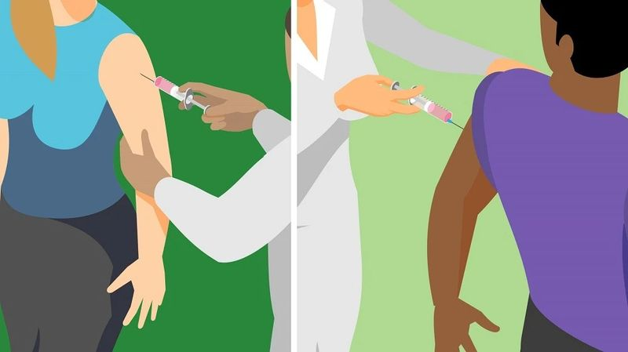
Gen Z bật “tường lửa” cho cơ thể: Các bạn nam cũng sẵn sàng chống virus HPV 🔗 MOI
Tọa độ vàng thăng cấp hệ miễn dịch Nếu ở thế hệ ba mẹ chúng mình, câu chuyện về HPV (Virus Papilloma gây ung thư cổ tử cung, ung thư vòm họng qua đường hô hấp, đường tình dục) có phần lạ lẫm thì nay v
Hợp tác xã dẫn dắt nông dân tham gia “sân chơi lớn” 🔗 MOI
Nhân viên của Công ty TNHH OCA Việt Nhật (xã Bình Giã) trong xưởng chế biến chocolate Đội ngũ nông dân mới Tại vùng chuyên canh bưởi da xanh của HTX Bưởi da xanh Sông Xoài (phường Tân Thành), không kh
Bạn trẻ Đà Nẵng 'số hóa' giải bài toán kết nối cộng đồng 🔗 MOI
Ngày 6/6, Thành Đoàn Đà Nẵng phối hợp với Quỹ Nhi đồng liên hợp quốc UNICEF tổ chức chương trình tổng kết và đánh giá hoạt động dự án “ Sáng kiến chuyển đổi số vì thành phố hòa nhập, kết nối cộng đồ
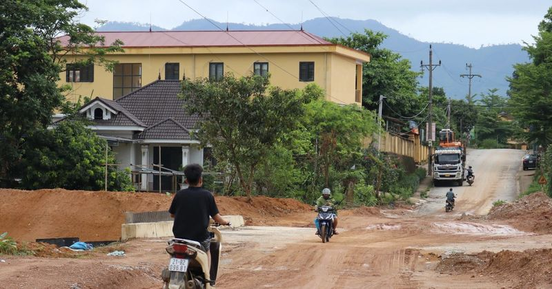
Người dân khốn khổ vì dự án chống ngập đào lên rồi... bỏ đó 🔗 MOI
Nằm cách trung tâm xã Trấn Yên không xa, trục đường liên xã từ Tỉnh lộ 163 kết nối quốc lộ 70 vốn là mạch máu giao thương duy nhất của hơn 1.000 hộ dân nơi đây. Thế nhưng, mục tiêu đổi mới hạ tầng gia
Giao dịch vật phẩm ảo: Không còn là "vùng xám" 🔗 MOI
Theo Nghị định 174/2026/NĐ-CP của Chính phủ, ban hành ngày 15-5, có hiệu lực từ ngày 1-7, quy định xử phạt vi phạm hành chính trong các lĩnh vực bưu chính, viễn thông, công nghệ thông tin, an toàn thô
Andreeva vô địch Roland Garros ở tuổi 19 🔗 MOI
Trên sân Philippe Chatrier, Andreeva trải qua những phút đầu đầy căng thẳng ở trận chung kết Grand Slam đầu tiên. Tay vợt Nga liên tục mắc lỗi trước lối chơi biến hóa của Chwalinska và sớm bị dẫn 2-3
5 món nên ăn sau tuổi 40 giúp xương chắc khỏe 🔗 MOI
Sữa chua và các sản phẩm từ sữa Canxi là thành phần quan trọng cấu tạo nên xương. Theo Viện Quốc gia về Viêm khớp, Cơ xương và Da Mỹ (NIAMS), sữa, sữa chua và phô mai là những nguồn canxi tốt. Nhiều s
Đều chứa đường, vì sao trái cây vẫn được khuyến khích còn nước ngọt thì không? 🔗 MOI
Dù cùng chứa nhiều đường nhưng trái cây ngọt vẫn được xem là lành mạnh, còn nước ngọt thì không là vì những lý do sau: Khác nhau về các dưỡng chất kèm theo Cả trái cây và nước ngọt đều chứa các loại đ
Paget sinh dục – dạng ung thư dễ bị bỏ sót 🔗 MOI
TS Nguyễn Hồng Sơn, Trưởng Khoa Phẫu thuật tạo hình thẩm mỹ và phục hồi chức năng, Bệnh viện Da liễu Trung ương, cho hay một số bệnh nhân đến khám do lầm tưởng viêm da thông thường, khi bệnh trở nặng
Nỗ lực vươn ra quốc tế của Sơn Tùng M-TP 🔗 MOI
Sau một tuần phát hành, MV Come My Way thu hút 26 triệu lượt xem trên YouTube. Không chỉ gây sốt trong nước, sản phẩm đứng đầu top ca khúc thịnh hành ở nhiều quốc gia như Mỹ, Nhật Bản, Australia, Đức.
Pháp sở hữu đội hình đắt giá nhất World Cup 2026 🔗 MOI
Theo Transfermarkt - nền tảng thống kê và định giá cầu thủ hàng đầu thế giới, 26 tuyển thủ Pháp chuẩn bị dự World Cup 2026 có tổng giá thị trường 1,76 tỷ USD. Với 230 triệu USD, đội trưởng Kylian Mbap
Chủ xe hybrid sạc điện bị chỉ trích 'không sạch' vì lười cắm điện, Toyota cho thấy điều ngược lại 🔗 MOI
Hóa ra chủ xe PHEV không lười cắm sạc, mà phụ thuộc vào việc họ sống ở đâu và sở hữu xe dưới hình thức nào - Ảnh: Toyota Trong nhiều năm qua, xe hybrid sạc điện (PHEV) thường bị hoài nghi về hiệu quả
Công cụ AI liên quan Anthropic tự ý xóa sạch dữ liệu của một doanh nghiệp trong 9 giây 🔗 MOI
Hành động phá hoại của công cụ lập trình AI đã khiến khách hàng của Công ty PocketOS rơi vào tình thế khó khăn - Ảnh TED HSU Báo Guardian đưa tin một công cụ lập trình vận hành bằng trí tuệ nhân tạo (
Chân dung doanh nghiệp 🔗 MOI
Không chỉ đánh dấu sự xuất hiện của ông Trịnh Văn Quyết, ĐHĐCĐ của FLC còn gây chú ý với kế hoạch đưa cổ phiếu trở lại giao dịch, tái cấu trúc.
Năng lượng & Khoáng sản 🔗 MOI
Trong số 96 dự án thu hút đầu tư năm 2026, có 21 dự án thuộc lĩnh vực năng lượng, 20 dự án về nhà ở, khu công nghiệp, 15 dự án hạ tầng khu, cụm công nghiệp...
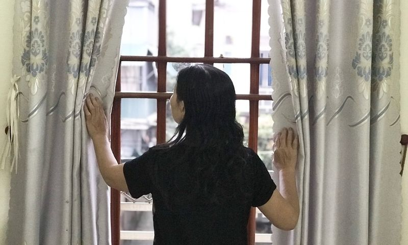
5 thói quen buổi sáng giúp cơ thể khỏe mạnh khi về già 🔗 MOI
Duy trì sức khỏe khi về già không chỉ đến từ chế độ ăn uống hay tập luyện mà còn bắt đầu từ những thói quen đơn giản. Một số lựa chọn lành mạnh vào buổi sáng có thể góp phần tăng năng lượng, hỗ trợ mi
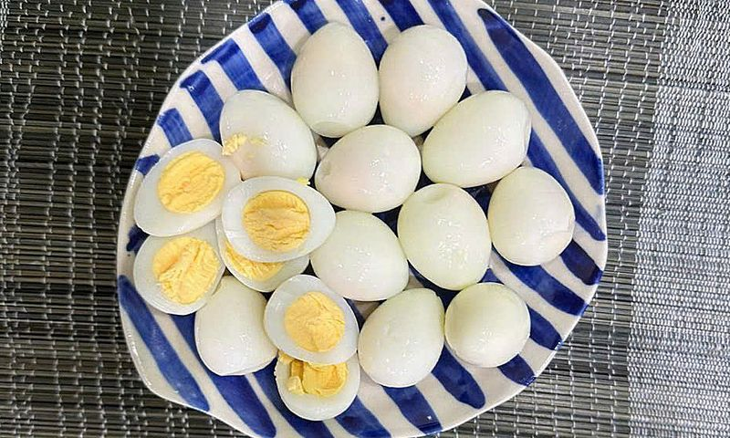
Lợi ích khi ăn protein vào bữa sáng 🔗 MOI
Cung cấp năng lượng Theo Eating Well , protein là thành phần quan trọng cấu tạo nên mọi tế bào trong cơ thể. Nhu cầu protein hằng ngày phụ thuộc vào cân nặng, độ tuổi, tình trạng sức khỏe và mức độ ho
Người phụ nữ thầm lặng giữ màu xanh cho nhà máy cao su 🔗 MOI
Sinh năm 1990 tại Hưng Yên, tốt nghiệp ngành Công nghệ sinh học môi trường, từ năm 2017, chị trực tiếp vận hành, quản lý hệ thống xử lý nước thải, bảo đảm nước sau xử lý đạt chuẩn trước khi xả thải và
Bắt, khám xét khẩn cấp nơi ở của Bùi Quý Luật SN 1983 🔗 MOI
Bắt, khám xét khẩn cấp nơi ở của Bùi Quý Luật SN 1983 Theo Duy Anh | 07/06/2026 07:44 AM | Xã hội Theo dõi Cafebiz.vn trên Đối tượng Bùi Quý Luật bị bắt quả tang khi đang vận chuyển số lượng lớn ma tú
Những mạng xã hội sẽ "làm mưa làm gió" trong thời gian tới 🔗 MOI
Facebook Twitter Lưu bài viết Bản in Copy link Trong nhiều năm, trải nghiệm mạng xã hội của mọi người chịu sự chi phối của những tập đoàn công nghệ như Meta (Facebook, Instagram, WhatsApp), Google (Yo
“Thắp sáng” vùng di sản phía Đông TPHCM 🔗 MOI
Di tích Bạch Dinh (phường Vũng Tàu, TPHCM) được thắp sáng bởi công nghệ ánh sáng, đưa di tích trở thành điểm đến hấp dẫn trong hành trình du lịch về phía Đông TPHCM. Ảnh: QUANG VŨ Hòa vào nhịp sống hô
Điểm 10 sẽ xuất hiện nhiều ở môn Tiếng Anh thi lớp 10 TPHCM 🔗 MOI
Luôn là môn có mặt bằng điểm cao nhất Trong nhiều năm qua, Tiếng Anh luôn là môn có mặt bằng điểm cao nhất trong kỳ thi lớp 10 TPHCM. Với nhiều học sinh, đây là môn tạo lợi thế quan trọng trong cuộc đ
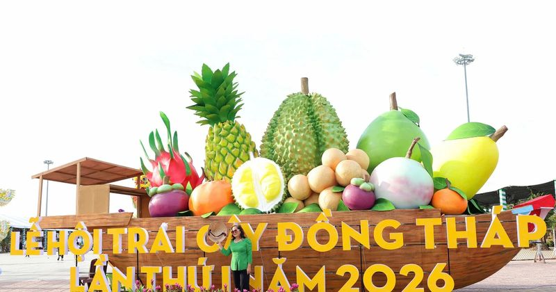
Tạo hình trái cây độc đáo ở lễ hội lớn nhất Đồng Tháp 🔗 MOI
Lễ hội trái cây Đồng Tháp lần thứ I năm 2026 do UBND tỉnh Đồng Tháp tổ chức, kéo dài tới ngày 8/6, tại Quảng trường Hùng Vương (phường Đạo Thạnh), hướng đến xây dựng lễ hội trở thành sự kiện thường ni
Kịch tính màn 'đại chiến' ánh sáng trên sông Hàn 🔗 MOI
Với chủ đề “Di sản”, đêm thi thứ 2 trong đã chinh phục hàng nghìn khán giả bằng một đêm hội mãn nhãn, nơi những giá trị văn hóa được kể bằng ngôn ngữ của ánh sáng, âm nhạc và cảm xúc. Đội Pháp Lux Fac
TP.HCM thí điểm công chức làm việc tại nhà 🔗 MOI
Làm việc từ xa 1 - 2 ngày/tuần Sở Nội vụ vừa trình UBND TP.HCM tờ trình xin chủ trương xây dựng và ban hành đề án xây dựng công sở hành chính thông minh, xác định 3 giai đoạn triển khai từ nay đến năm
8 kiến nghị, đề xuất của Thanh Hóa sau 1 năm vận hành chính quyền địa phương 2 cấp 🔗 MOI
Chưa tinh gọn số lượng đơn vị hành chính Theo báo cáo do Bí thư Tỉnh ủy Thanh Hóa Lê Đức Thái ký, sau 1 năm vận hành bộ máy của hệ thống chính trị và chính quyền địa phương 2 cấp, tỉnh đã triển khai h
Harry Kane lập đại công trong chiến thắng của tuyển Anh 🔗 MOI
Đội hình ra sân tuyển Anh Đoàn quân HLV Thomas Tuchel áp đảo trước đối thủ bị đánh giá thấp hơn Nhưng phài chờ đến cuối hiệp 1, Harry Kane mới khai thông bế tắc với pha đánh đầu hiểm hóc Harry Kane ti
Bức ảnh 58 năm trước hé lộ dấu tích hố chôn liệt sĩ ở công viên Lê Thị Riêng 🔗 MOI
Bộ Tư lệnh TP HCM đang tìm kiếm hài cốt liệt sĩ ở công viên Lê Thị Riêng, phường Hòa Hưng, với nghi vấn về hố chôn tập thể các chiến sĩ hy sinh trong chiến dịch Tết Mậu Thân 1968. Sự việc này bắt nguồ
Thế kẹt của bác sĩ ung thư 🔗 MOI
Đang đi buồng, bác sĩ Hà Hải Nam, Phó trưởng khoa Ngoại bụng 1, Bệnh viện K, Hà Nội, nhận tin bệnh nhân nữ 25 tuổi rơi vào tình trạng nguy hiểm. Cô nhập viện chưa đầy một tuần trước, ê kíp vẫn đang ch
'20 phút kinh hoàng' và những cuộc gọi giả mạo giọng nói 🔗 MOI
Đầu năm nay, Benz, 56 tuổi, sống ở Buffalo, New York, giật mình tỉnh giấc trong đêm bởi một cuộc gọi từ số lạ. Đầu dây bên kia là giọng nói giống Fred, con trai bà, đang cầu cứu. Ngay sau đó, bà nhận
Lịch âm hôm nay là ngày Thuần Dương: Ngày may mắn để xuất hành 🔗 MOI
Dương lịch hôm nay là chủ nhật, đánh dấu năm 2026 trải qua ngày thứ 156. Theo lịch âm hôm nay 7.6 là ngày 22 tháng 4, theo cách gọi can chi là ngày Nhâm Tý, tháng Quý Tỵ, năm Bính Ngọ. Theo lịch âm hô
Điểm nóng xung đột ngày 7-6: Lầu Năm Góc bất ngờ cảnh giác với Israel? 🔗 MOI
Lầu Năm Góc đã nâng mức đánh giá mối đe dọa phản gián từ Israel lên cấp "nghiêm trọng" - mức cao nhất trong hệ thống phân loại nội bộ - giữa lúc bất đồng giữa Washington và Tel Aviv về các cuộc xung đ
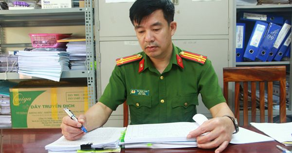
Người giữ "nhịp thở" sau song sắt 🔗 MOI
Đó là trung tá Mai Ngọc Tuân, Đội trưởng Đội Y tế Trại giam Tân Lập, (tỉnh Phú Thọ), thuộc Cục C10 - Bộ Công an. Với anh, làm y tế trong trại giam không chỉ là chữa bệnh mà là giữ lại sự sống và niềm
Khát vọng vươn xa 🔗 MOI
Khuất Hồng Trúc Vy (22 tuổi, sinh viên Trường Đại học Nguyễn Tất Thành) theo đuổi mục tiêu thay đổi nhận thức cộng đồng về giá trị của chất thải nông nghiệp. Cô dẫn đầu nhóm bạn dành 2 năm nghiên cứu,
Lan tỏa tinh thần yêu nước 🔗 MOI
Điều đó góp phần khơi dậy lòng yêu nước, ý thức, trách nhiệmbảo vệ chủ quyền Tổ quốc trong các tầng lớp nhân dân. Lễ trao giải cuộc thi ảnh "Thiêng liêng cờ Tổ quốc" lần thứ 4 và cuộc thi viết "Chủ qu
Người giữ nhịp bản hòa âm đoàn kết 🔗 MOI
Đồng thời, chị tạo sự đồng thuận trong cộng đồng. Con đường bê tông dài hơn 700 m ở thôn Trường Tùng, xã Hải Lạng, tỉnh Quảng Ninh nay sạch sẽ, hai bên trồng hoa, trẻ con chạy chân trần đuổi nhau mỗi
🔗 MOI
Ngay trong buổi ra mắt cuốn Họ và tên - một lịch sử nhìn từ danh tính người Việt gần đây , Trần Quang Đức đã nhận được tin sách chuẩn bị tái bản. Đây không phải lần đầu tiên một công trình nghiên cứu
Như chưa hề có cuộc chia ly: Lúc trao con cho người ta, tôi khóc, còn con cứ cười 🔗 MOI
Cuộc đoàn tụ giữa bà Sinh và con gái sau 47 năm diễn ra trong nước mắt, rất xúc động - Ảnh: BTC Trên sân khấu Như chưa hề có cuộc chia ly , bà Vũ Thị Sinh khóc mãi và khóc rất to khi nghe lại câu chuy
Geely Coolray 2026 ra mắt Việt Nam: Giá từ 499 triệu, SUV hạng B giá hạng A 🔗 MOI
Geely Coolray 2026 ra mắt Việt Nam Ngày 5-6, Geely chính thức giới thiệu phiên bản nâng cấp giữa vòng đời của mẫu SUV cỡ B Coolray tới khách hàng Việt Nam. Đây cũng là phiên bản mới nhất của Geely Coo
Coi chừng nhiễm liên cầu lợn vì thói quen ăn tiết canh, thịt tái 🔗 MOI
Làm thế nào để lên thực đơn dinh dưỡng cho gia đình nhiều thế hệ? 🔗 MOI
Khám tiền hôn nhân ở nam và nữ khác nhau như thế nào? 🔗 MOI
Sử dụng thuốc tăng cường sinh lý để kéo dài 'cuộc yêu', có nên không? 🔗 MOI
Chồng không tinh trùng nhưng vợ vẫn sinh được con 'chính chủ', vì sao? 🔗 MOI
Viêm da tiết bã ở trẻ em khác gì ở người lớn? 🔗 MOI
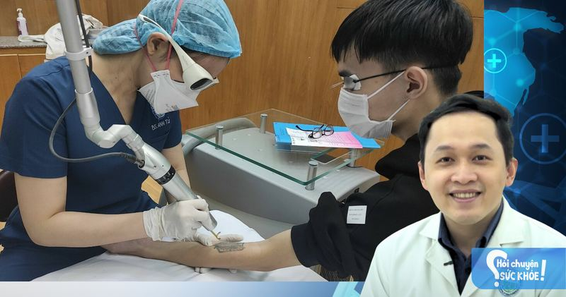
Xóa xăm có xóa được triệt để hay không? 🔗 MOI
6 dấu hiệu thầm lặng cảnh báo đột quỵ trước 1 tháng 🔗 MOI
Theo The Times of India, 6 dấu hiệu của cơ thể cảnh báo trước 1 tháng khi đột quỵ sắp xảy ra: 1. Chóng mặt bất thường Cảm giác chóng mặt thường được cho là do bỏ bữa, mất nước hoặc đứng dậy quá nhanh.
Lễ trưởng thành xúc động và lời dặn cô hiệu trưởng: 'Kiến thức giúp đi nhanh, nhân cách giúp đi xa' 🔗 MOI
Các thầy cô trong ban giám hiệu Trường THPT Nguyễn Thái Bình cùng các học sinh lớp 12 trong nghi thức trưởng thành - Ảnh: V.D. Sáng 6-6, hàng trăm học sinh lớp 12 Trường THPT Nguyễn Thái Bình (TP.
Dân miền Tây trổ tài đan võng bằng dây chuối khiến du khách thích thú 🔗 MOI
🔗 MOI
Hãy chọn một đám mây từ hình ảnh, lựa chọn đó sẽ tiết lộ liệu bạn có đang tận dụng hết lợi thế của mình hay không. - Đám mây 1 Đám mây 1 Nếu chọn đám mây số 1, điều đó cho thấy bạn không quá bận tâm đ
Hệ thống Bảo hiểm xã hội Việt Nam: Tăng tốc thực hiện các chỉ tiêu nhiệm vụ năm 2025 🔗 MOI
Theo Bảo hiểm xã hội (BHXH) TP. Hồ Chí Minh, mặc dù năm 2025 gặp một số khó khăn, tuy nhiên tập thể cán bộ viên chức, người lao động BHXH TP. Hồ Chí Minh quyết tâm hoàn thành vượt chỉ tiêu giao, với s
Tiền đạo Bồ Đào Nha nhận thẻ đỏ vì bóp cổ đối thủ ở trận giao hữu chuẩn bị World Cup 2026 🔗 MOI
U19 Việt Nam nhận tin dữ từ cục diện lạ lùng của Giải U19 Đông Nam Á 🔗 MOI
U19 Việt Nam (áo đỏ) vẫn đối diện nguy cơ bị loại - Ảnh: VFF Tối 6-6, U19 Campuchia đánh bại U19 Philippines với tỉ số 3-0 trong lượt trận thứ 2 bảng C Giải U19 Đông Nam Á . Kết quả này khiến cuộc đua
Lịch trực tiếp vòng cuối V-League: Hạ màn mùa giải 🔗 MOI
Lịch trực tiếp vòng cuối V-League: Hạ màn mùa giải - Đồ họa: AN BÌNH Vòng 26 (vòng cuối) V-League 2025-2026 sẽ diễn ra đồng loạt vào lúc 18h ngày 7-6. Trong khi cuộc đua vô địch đã ngã ngũ thì cuộc ch
Dự án trục đại lộ sông Hồng 🔗 MOI
Ngôi sao Bồ Đào Nha nhận thẻ đỏ vì bóp cổ, tát đối thủ ở trận giao hữu chuẩn bị World Cup 🔗 MOI
Khoảnh khắc Rafael Leao (số 17) xô xát với Ivan Roman - Ảnh: Instagram Trong trận đấu này, Rafael Leao đá cặp với siêu sao Cristiano Ronaldo trên hàng công của đội tuyển Bồ Đào Nha và họ đã chơi khá ấ
Cờ vua Việt Nam sở hữu 1 trong 9 kỳ thủ bất bại ở giải châu Á 🔗 MOI
Đầu Khương Duy tiếp tục cho thấy vị thế của một thần đồng cờ vua - Ảnh tư liệu Nổi bật nhất vẫn là Đầu Khương Duy (elo 2.521), kỳ thủ thần đồng vẫn chưa đón sinh nhật tuổi 15. Khương Duy giữ vị trí th
Như chưa hề có cuộc chia ly 🔗 MOI
Giới thời trang mê quần short Bermuda 🔗 MOI
Kendall Jenner linh hoạt sử dụng áo khoác da oversized và áo quây đen để tạo điểm nhấn cùng quần short Bermuda - Ảnh: Hellogiggles Trong nhiều thập kỷ, quần short Bermuda liên tục trở lại rồi lắng xuố
Thủ đoạn tinh vi của nhóm 'lừa tình' chuyên săn đàn ông thành đạt 🔗 MOI
Công an làm việc với Nguyễn Đăng Dũng - nghi phạm cầm đầu đường dây lừa đảo qua mạng - Ảnh: MINH QUÂN Công an tỉnh Nghệ An vừa phối hợp với các đơn vị nghiệp vụ triệt phá thành công một đường dây lừa
U19 Việt Nam đấu U19 Indonesia: Không được phép thua 🔗 MOI
U19 Việt Nam cần thi đấu thật tỉnh táo trước U19 Indonesia - Ảnh: AFF Với cùng 6 điểm sau 2 trận, U19 Việt Nam và U19 Indonesia đang chia nhau 2 vị trí dẫn đầu bảng A Giải U19 Đông Nam Á 2026. Đoàn qu
Thời tiết hôm nay 7-6: Bắc Bộ ngày nắng nóng, Nam Bộ sáng nắng chiều mưa 🔗 MOI
Khu vực Bắc Bộ thời tiết ban ngày tiếp tục nắng nóng - Ảnh: NAM TRẦN Trung tâm Dự báo khí tượng thủy văn quốc gia cho biết hôm nay 7-6, thời tiết Bắc Bộ ngày nắng nóng, có nơi nắng nóng gay gắt. Đêm n
Nhật Bản ra mắt 'máy giặt người' trị giá 385.000 USD, làm sạch từ đầu đến chân trong 15 phút 🔗 MOI
Thống đốc Yoshimura Yoshifumi của tỉnh Osaka trải nghiệm máy giặt người Mirai - Ảnh: SISA COMMUNICATION YOUTUBE Theo trang Interesting Engineer ngày 30-11, Công ty Science Inc. của Nhật Bản vừa chính
Hoàn thiện khung khổ pháp lý về tiết kiệm 🔗 MOI
Pháp luật Trong công cuộc phòng, chống lãng phí hiện nay khó có thể tránh khỏi những khó khăn, nguy hiểm, ảnh hưởng tới người đấu tranh chống lãng phí. Do đó, việc bảo vệ người cung cấp thông tin phát
Cải cách tài chính công thúc đẩy tăng trưởng 🔗 MOI
Pháp luật Trong những năm qua, cùng với việc đẩy mạnh tiến trình xây dựng Nhà nước pháp quyền Việt Nam xã hội chủ nghĩa, công tác xây dựng và hoàn thiện hệ thống pháp luật đã đạt được nhiều thành tựu
bảng giá truyền thông 🔗 MOI

Thông cáo báo chí 🔗 MOI
Thông cáo báo chí 05/06/2026 (Chinhphu.vn) - Văn phòng Chính phủ vừa có Thông cáo báo chí chỉ đạo, điều hành của Chính phủ, Thủ tướng Chính phủ ngày 5/6/2026. 04/06/2026 (Chinhphu.vn) - Văn phòng Chín

Chỉ đạo, quyết định của Chính phủ - Thủ tướng Chính phủ 🔗 MOI
06/06/2026 (Chinhphu.vn) - Chính phủ ban hành Nghị định số 199/2026/NĐ-CP ngày 05/6/2026 quy định chính sách hỗ trợ phục vụ đối với các chức danh, chức vụ lãnh... 06/06/2026 (Chinhphu.vn) - Thủ tướng
Công an Cà Mau tìm bị hại vụ mua bán người sang Campuchia để cưỡng bức lao động 🔗 MOI
Ngày 7.6, tin từ Cơ quan An ninh điều tra Công an tỉnh Cà Mau cho biết, đơn vị đang truy tìm bị hại trong vụ án hình sự mua bán người xảy ra tại xã Tân Thuận, tỉnh Cà Mau, được xác định có liên quan đ
Ngày Quốc tế Yoga: Hướng tới xây dựng xã hội khỏe mạnh, hạnh phúc 🔗 MOI
Facebook Twitter Lưu bài viết Bản in Copy link Sáng 7/6, tại Quảng trường Võ Nguyên Giáp (phường Phan Đình Phùng), Sở Văn hóa, Thể thao và Du lịch tỉnh Thái Nguyên tổ chức Chương trình chào mừng Ngày
Văn hóa văn nghệ góp phần bồi đắp lý tưởng cho người lính 🔗 MOI
Những ngày đầu tháng 6/2026, trong không khí cả nước hướng về kỷ niệm 115 năm Ngày Bác Hồ ra đi tìm đường cứu nước (5/6/1911-5/6/2026), cán bộ, chiến sĩ Trung đoàn 4, Sư đoàn 5 , Quân khu 7 đã có đêm
Bác sĩ cảnh báo: Thường xuyên nháy mắt, coi chừng nguy cơ co giật, biến dạng mặt 🔗 MOI
Từ cái "nháy mắt hên xui" đến tình trạng co giật biến dạng gương mặt Tần suất nháy mắt và co giật mặt xuất hiện ngày càng dày đặc và không hề thuyên giảm. Dù đã chạy chữa khắp nơi tại địa phương bằng
Truyền 10 lít máu cứu sống cô bé 12 tuổi bị sốt xuất huyết Dengue 🔗 MOI
Tại tọa đàm " Sốt xuất huyết Dengue: Nhận diện nguy cơ và gánh nặng bệnh tật - Chủ động phòng ngừa cho cả gia đình" do Trung tâm Kiểm soát bệnh tật TPHCM phối hợp cùng Công ty TNHH Dược phẩm Takeda Vi
600 đại biểu dự Đại hội toàn quốc Hội Nông dân Việt Nam lần thứ IX 🔗 MOI
Facebook Twitter Lưu bài viết Bản in Copy link Đại hội đại biểu toàn quốc Hội Nông dân Việt Nam lần thứ IX, nhiệm kỳ 2026-2031 diễn ra từ ngày 7-8/6/2026 tại Trung tâm Hội nghị Quốc gia (Hà Nội). Dự Đ
Mộng mơ… - Thơ của Lò Duy Bưu 🔗 MOI
minh họa: Tuấn Anh Những dòng sông cũ không buồn chờ những cơn mưa bầu trời sáng nay lạ lắm anh biết không? màu trời chẳng thiên thanh mà đen trắng Dòng sông im lìm bên bến vắng ước một lần thuyền bè
Triệu Lộ Tư, Tăng Thanh Hà biến hình ngoạn mục chỉ nhờ một thay đổi cực nhỏ 🔗 MOI
Trên trang cá nhân, Tăng Thanh Hà vừa đăng tải ảnh hậu trường một buổi chụp ảnh với lời cảm thán không nhận ra chính mình. Quả thực hiếm khi ngọc nữ màn ảnh Việt trang điểm đậm theo lối cá tính đến nh
Da nhạy cảm có nên triệt lông bằng laser? 🔗 MOI
Trả lời: Da nhạy cảm, dễ đỏ rát hoặc từng bị viêm nang lông vẫn có thể triệt lông bằng laser trong một số trường hợp. Tuy nhiên, bác sĩ cần đánh giá tình trạng da trước điều trị để lựa chọn phương phá
U não lành tính có cần xạ trị? 🔗 MOI
Trả lời: U não lành tính là một khối gồm các tế bào phát triển bất thường trong não nhưng không phải là ung thư. U não lành tính có ranh giới rõ ràng, không xâm nhập vào các mô não khỏe mạnh lân cận,
5 việc người tiểu đường nên làm mỗi sáng giúp giảm viêm 🔗 MOI
Viêm là phản ứng tự nhiên của cơ thể do chấn thương hoặc nhiễm trùng. Tuy nhiên, tình trạng viêm kéo dài có thể ảnh hưởng tiêu cực đến sức khỏe tổng thể. Ở người tiểu đường, kiểm soát viêm là một phần
Bị huyết áp thấp khi nào cần uống thuốc? 🔗 MOI
Trả lời: Huyết áp thấp ở người trưởng thành được xác định khi chỉ số dưới 90/60 mmHg. Tình trạng này khá phổ biến và có thể gặp ở nhiều độ tuổi. Ở một số người, huyết áp thấp là tình trạng sinh lý bìn
🔗 MOI
Sau khi Sở GD-ĐT Hà Nội công bố đáp án các môn thi ở kỳ thi tuyển sinh lớp 10 năm 2026, các thí sinh đã phần nào tính toán được điểm số của mình. Một số phụ huynh, thí sinh lo lắng về cơ hội, song cũn
Uống nước rau má rất tốt nhưng đại kỵ với 3 nhóm người 🔗 MOI
Tiến sĩ Ngô Đức Phương, Viện trưởng Viện khoa học thuốc nam cho biết, rau má (tên khoa học là Centella asiatica) là loại rau, dược liệu rất quen thuộc ở Việt Nam. Từ lâu, loại cây này đã được dùng để
Điểm tựa tâm thức giữa biển 🔗 MOI
Dường như trong vô vàn xa xăm tiền kiếp, linh hồn tôi đã thuộc về những con thuyền viễn xứ lênh đênh. Linh hồn cô độc ấy của tôi đã từng mãnh liệt, khát khao nhìn thấy ánh sáng của những ngọn hải đăng
Giá heo hơi hôm nay, 7-6: Chợ đầu mối quay đầu giảm mạnh 🔗 MOI
Ngày 7-6, thông tin từ thương lái cho biết sản lượng heo mảnh nhập về chợ đầu mối nông sản thực phẩm Hóc Môn (TPHCM) tăng 19 tấn so với ba ngày trước lên 374 tấn. Giá heo mảnh được thương lái điều chỉ
Toyota Corolla Cross phiên bản bán tải lần đầu lộ diện 🔗 MOI
Phân khúc xe bán tải khung liền khối đang tăng trưởng mạnh trong những năm gần đây, và Toyota dường như cũng không muốn đứng ngoài cuộc. Theo Carscoops , một nguyên mẫu bán tải cỡ nhỏ của Toyota vừa đ
4 lưu ý hết sức quan trọng khi đăng ký mua nhà ở xã hội 🔗 MOI
Có đất nhưng chưa xây nhà, có được mua nhà ở xã hội? Thủ tướng: Nhà nước có thể mua lại nhà ở xã hội để công nhân, người lao động thuê Đề xuất ưu tiên lực lượng vũ trang mua nhà ở xã hội cách chỗ làm
Khắc phục hậu quả bom mìn, chất độc hóa học, vì sự an toàn của người dân 🔗 MOI
Theo Quyết định, Thủ tướng Chính phủ Lê Minh Hưng làm Trưởng Ban Chỉ đạo. Các Phó Trưởng ban Chỉ đạo là: Đại tướng Phan Văn Giang, Phó Thủ tướng Chính phủ, Bộ trưởng Quốc phòng (Phó Trưởng ban Thường
Becamex TP HCM có thoát hiểm phút chót? 🔗 MOI
Nếu kịch bản xấu nhất xảy ra, đó sẽ không chỉ là một suất xuống hạng, mà còn là dấu chấm hết cho một trong những biểu tượng lớn nhất của bóng đá Việt Nam trong kỷ nguyên chuyên nghiệp. Nên tự trách mì
Nhận định SHB Đà Nẵng vs Thanh Hóa, 18h00 ngày 7/6: Chủ nhà chiếm ưu thế 🔗 MOI
SHB Đà Nẵng sẽ trụ hạng nếu đánh bại Thanh Hóa. Nhận định SHB Đà Nẵng vs Thanh Hóa Trận hòa trước Hà Tĩnh ở vòng 25 không chỉ giúp SHB Đà Nẵng duy trì hy vọng ở lại V.League mà còn mang đến lợi thế
Triệt phá cơ sở massage kiếm 600 triệu đồng/tháng từ mại dâm 🔗 MOI
(PLO)- Công an tỉnh Tây Ninh triệt phá một cơ sở massage tổ chức mại dâm, bước đầu xác định nguồn thu lợi bất chính lên tới 600 triệu đồng mỗi tháng. Ngày 7-6, thông tin từ Phòng Cảnh sát hình sự Công
“Nghe thành phố thở” qua từng khung hình 🔗 MOI
Đó là những khung hình mang nhiều cảm hứng thị giác, có bức chỉ đơn giản ghi lại khoảnh khắc bình dị trong đời sống thường nhật, có bức là nhịp chuyển mình mạnh mẽ... Các tác phẩm không chỉ làm nổi bậ
Chỗ dựa bình yên 🔗 MOI
Có những câu nói vô tình của con khiến tôi buồn cả ngày. Nghe xong, mẹ cười nhẹ nhàng, nói: "Mẹ cũng từng buồn vì con như vậy đó". Tôi ngẩn người.
“Vương quốc hang động” và những bí ẩn bất tận 🔗 MOI
Hàng trăm hang động cùng với vô số thạch nhũ hàng triệu năm tuổi, những dòng sông ngầm và nhiều bí ẩn địa chất đặc sắc được phát hiện, tạo nên các giá trị nổi bật toàn cầu, góp phần khẳng định vị thế
Tiền đạo Bồ Đào Nha tát đối thủ trong trận giao hữu trước World Cup 🔗 MOI
Căng thẳng nổ ra cuối hiệp một, khi Joao Cancelo tranh chấp với Agustin Arce sát đường biên ngang. Sau khi ngã xuống sân, Arce dường như tác động bằng chân với Cancelo. Hậu vệ của Bồ Đào Nha phản ứng,
Kiến tạo hệ sinh thái nhân lực an ninh mạng 🔗 MOI
Tuy nhiên, trong khi các nguy cơ tấn công mạng ngày càng tinh vi, Việt Nam vẫn đối mặt khoảng cách đáng kể giữa nhu cầu thực tiễn và năng lực đào tạo, đặt ra yêu cầu cấp thiết phải xây dựng hệ sinh th
Đề nghị 17 địa phương ứng phó mưa dông sau đợt nắng nóng 🔗 MOI
Theo Trung tâm Dự báo khí tượng - thủy văn quốc gia, Hà Nội và miền Bắc tiếp tục nắng nóng trong ngày 7-6, sau đó có đợt mưa lớn. Ảnh: PHÚC HẬU Theo Trung tâm Dự báo khí tượng - thủy văn quốc gia, ngà
Argentina chia nửa buồn vui trước World Cup: Đón Messi trở lại, tiễn trung vệ quan trọng về nước vì chấn thương 🔗 MOI
LĐBĐ Argentina xác nhận trung vệ Leonardo Balerdi sẽ lỡ hẹn với World Cup 2026 do chấn thương. "Hậu vệ Leonardo Balerdi đã dính chấn thương cơ dép ở phần bắp chân phải và sẽ không thể góp mặt trong th
Đường đến World Cup 2026 của Senegal: Sư tử Teranga vượt núi cao 🔗 MOI
Hồ sơ đội tuyển Senegal Hạng mục Thông tin Liên đoàn CAF HLV trưởng Pape Thiaw Đội trưởng Kalidou Koulibaly Số lần dự World Cup 4 Thành tích tốt nhất Tứ kết (2002) Thành tích World Cup gần nhất Vòng 1
Nghệ sĩ Lê Giang bức xúc 🔗 MOI
Ồn ào xoay quanh MV Come My Way của Sơn Tùng M-TP chưa hạ nhiệt khi các bên liên quan tiếp tục có những bài viết chia sẻ thông tin và cập nhật hướng xử lý trên mạng xã hội. Không chỉ đơn vị sản xuất M
Lễ hội pháo hoa Đà Nẵng: Đội Pháp gây choáng ngợp, đội Việt Nam chạm cảm xúc 🔗 MOI
Tối 6.6, đêm thi thứ 2 của Lễ hội Pháo hoa Quốc tế Đà Nẵng (DIFF) 2026 với chủ đề Di sản đã mang đến cho hàng chục nghìn khán giả bên sông Hàn một đại tiệc ánh sáng và nghệ thuật mãn nhãn. Là màn so t
Lời cảnh báo mới về lương thực 🔗 MOI
TIN MỚI Hãng tin AP dẫn phân tích của WFP về 3 quốc gia dễ bị tổn thương cho thấy thêm 2,5 triệu người ở Somalia, 2,3 triệu người ở Afghanistan và 1,3 triệu người ở Sri Lanka đang phải vật lộn để đáp
[Video] Từ 1/7, khám chữa bệnh BHYT dưới 380.000 đồng sẽ được miễn phí 🔗 MOI
Bảo hiểm xã hội Việt Nam cho biết, một trong những điểm mới đáng chú ý là người tham gia BHYT tự đi khám, chữa bệnh ngoại trú tại một số cơ sở y tế cấp cơ bản và cấp chuyên sâu sẽ được quỹ BHYT chi tr
Liverpool lên kế hoạch tạo nên hàng công trị giá 340 triệu bảng 🔗 MOI
(PLO)- Liverpool lên kế hoạch tăng cường một bản hợp đồng "bom tấn" để hoàn thiện hàng công trị giá 340 triệu bảng Anh với người thay thế Mo Salah được xác định là ưu tiên. Liverpool hy vọng sẽ cạnh t
FIFA thiết kế huy hiệu riêng để tri ân Messi và Ronaldo tại World Cup 2026 🔗 MOI
Nhằm tôn vinh những cầu thủ bền bỉ cống hiến cho World Cup, FIFA đã ra quyết định thú vị. Họ thiết kế một loại huy hiệu đặc biệt mang tên "FIFA World Cup Legacy" (tạm dịch: Di sản World Cup). Huy hiệu
[Video] Không khí lạnh sẽ gây mưa lớn cho miền Bắc 🔗 MOI
Theo Trung tâm Dự báo Khí tượng Thủy văn Quốc gia, một bộ phận không khí lạnh đang di chuyển xuống nước ta. Dự báo từ chiều tối 8/6, khối không khí lạnh này bắt đầu ảnh hưởng đến khu vực vùng núi Bắc
Derby thủ đô chia tay HLV Popov 🔗 MOI
Trận đấu diễn ra trên sân Hàng Đẫy lúc 18 giờ ngày 7-6 (FPT Play). Thể Công Viettel chỉ cần thêm 1 điểm để chính thức giành ngôi á quân V-League 2025-2026 cùng tấm vé tham dự AFC Champions League Two
TUYỂN SINH ĐẠI HỌC 2026: Mỗi thí sinh có 15 nguyện vọng 🔗 MOI
Nguyện vọng phải được sắp xếp theo thứ tự ưu tiên từ cao xuống thấp Đến nay, nhiều trường đại học trên cả nước đã thông báo kế hoạch tuyển sinh dự kiến cho năm 2026. Theo quy định mới, tất cả thí sinh
Thời tiết ngày 7/6: Bắc Bộ, Trung Bộ vào cao điểm của đợt nắng nóng gay gắt 🔗 MOI
Facebook Twitter Lưu bài viết Bản in Copy link Theo Trung tâm Dự báo Khí tượng Thủy văn Quốc gia, ngày và đêm 7/6, Bắc Bộ và Trung Bộ bước vào cao điểm của đợt nắng nóng gay gắt, có nơi đặc biệt gay g
VIDEO: Núi lửa phun trào dữ dội ở Nga, kích hoạt cảnh báo hàng không cấp đỏ 🔗 MOI
(PLO)- Núi lửa Shiveluch trên bán đảo Kamchatka ở vùng Viễn Đông của Nga phun trào, tạo ra một cột tro bụi khổng lồ cao tới 10 km lên bầu trời. Ngày 6-6, vụ phun trào của núi lửa Shiveluch trên bán đả
Nóng hôm nay: TP.HCM tặng nhà mới đến nhà nghiên cứu Nguyễn Đình Tư; Việt Nam giành 7 huy chương Olympic Toán học châu Á - Thái Bình Dương 🔗 MOI
(PLO)- TP.HCM tặng nhà mới đến nhà nghiên cứu Nguyễn Đình Tư; Tài xế chở cọc bê tông trên nóc xe bị phạt gần 12 triệu đồng; Việt Nam xuất sắc giành 7 huy chương tại Olympic Toán học châu Á - Thái Bình
Báo Sài Gòn Giải Phóng ngày 7/6/2026 🔗 MOI
Nhận định U19 Việt Nam vs U19 Indonesia: Thắng vào bán kết 🔗 MOI
Cuộc chạm trán U19 Việt Nam vs U19 Indonesia chính là 'chung kết' của bảng A, xác định đội đầu bảng cùng tấm vé trực tiếp vào bán kết giải U19 Đông Nam Á . Trước trận đấu, U19 Việt Nam nắm lợi thế khi
Tự hào mang âm nhạc Việt ra thế giới 🔗 MOI
Ba thành viên DTAP tại Giải thưởng Tinh hoa Việt mùa đầu tiên Xuyên Việt - hát cùng đất nước “Chúng tôi mở ra hành trình 14 ngày đi theo đường mòn Hồ Chí Minh - Trường Sơn, lấy cảm hứng từ đoàn văn cô
Thời tiết ngày 7/6: Bắc Bộ, Trung Bộ tiếp tục nắng nóng gay gắt, chiều tối và đêm có mưa rào 🔗 MOI
Theo Trung tâm Dự báo khí tượng thủy văn quốc gia, khu vực Hà Nội ngày nắng nóng và nắng nóng gay gắt , chiều tối và đêm có mưa rào và dông vài nơi. Thành phố Hồ Chí Minh ngày nắng, riêng chiều tối và
Giữ bình yên nhịp đường ray Tổ quốc 🔗 MOI
Thời gian qua, nhiều chương trình chăm lo thiết thực của Tổng Công ty đường sắt Việt Nam đã tiếp thêm động lực để người lao động vững tin gắn bó với công việc vốn rất nhiều áp lực này. Có những giá tr
So tài Á - Phi ở đấu trường World Cup 🔗 MOI
N GANG NGỬA TRONG SUỐT LỊCH SỬ Mãi đến kỳ World Cup đầu tiên trong thế kỷ 21, tức World Cup thứ 17 diễn ra vào năm 2002, Hàn Quốc mới trở thành đội châu Á đầu tiên lọt được vào vòng bán kết. Họ không
Đại hội đại biểu toàn quốc Hội Nông dân Việt Nam lần thứ IX 🔗 MOI
Facebook Twitter Lưu bài viết Bản in Copy link Diễn ra trong các ngày 7 và 8/6/2026 tại Thủ đô Hà Nội, Đại hội đại biểu toàn quốc Hội Nông dân Việt Nam lần thứ IX, nhiệm kỳ 2026-2031 có chủ đề "Đoàn k
Miền Bắc nắng nóng đỉnh điểm trước khi đón mưa lớn 🔗 MOI
Khu vực Đông Bắc Bộ hôm nay nắng nóng và nắng nóng gay gắt, chiều tối và đêm có mưa rào và dông vài nơi. Gió tây nam đến nam cấp 2-3. Nhiệt độ thấp nhất 27-30 độ, có nơi dưới 26 độ.
Thanh Hương: 'Tôi làm dư sống’ 🔗 MOI
Giải trí Đạo diễn Đinh Tuấn Vũ: 'Khó khăn của Quốc Trường là cùng lúc yêu Tiểu Vy và hai nữ diễn viên khác'
Phí dịch vụ quản lý chung cư cao nhất bao nhiêu? 🔗 MOI
Khung giá dịch vụ quản lý vận hành nhà chung cư không có thang máy quy định mức giá tối thiểu 1.600 đồng/m 2 /tháng, mức giá tối đa 7.500 đồng/m 2 /tháng. Chung cư có thang máy có mức tối thiểu 4.400
Vẻ đẹp ngược đời của chim nhát hoa: Con mái đẹp rực rỡ, con trống chăm con 🔗 MOI
Anh Đinh Xuân Trường (42 tuổi, ở TP.HCM) là nhiếp ảnh gia chuyên chụp ảnh thiên nhiên, đặc biệt là chụp chim trời và động vật hoang dã. "Điều hấp dẫn nhất của thể loại nhiếp ảnh này với tôi là cảm giá
Thể Công Viettel chờ đoạn kết đẹp 🔗 MOI
Dù vắng Alan nhưng CAHN vẫn còn nhiều tay săn bàn đang có phong độ ổn định. Hiện tại, Thể Công Viettel đang hơn đội theo sau là Ninh Bình vừa vặn 3 điểm, nhưng có bất lợi là thua đối thủ này trong đối
Báo Nhân Dân số 25769 🔗 MOI
Điều gì xảy ra với não bộ khi uống cà phê mỗi ngày? 🔗 MOI
Cà phê là thức uống quen thuộc của nhiều người nhờ giúp tăng sự tỉnh táo và khả năng tập trung. Tuy nhiên, khi trở thành thói quen hàng ngày, caffeine trong đồ uống này có thể tác động đến cách não bộ
Loại lá 'khắc tinh' của đường huyết, giảm mỡ máu 🔗 MOI
Tiến sĩ, lương y Phùng Tuấn Giang, Chủ tịch Viện Nghiên cứu phát triển y dược cổ truyền Việt Nam cho biết, theo y học cổ truyền, lá xoài có tính mát, vị chua ngọt. Loại lá này có tác dụng chỉ khát, th
Khởi nghiệp quán ăn vặt: Bài toán cân bằng giữa 'Xu hướng' và 'Chất lượng' 🔗 MOI
Từ những con hẻm nhỏ đến các tuyến đường lớn, những hàng quán ăn vặt xuất hiện khắp nơi và đã trở thành một phần quen thuộc của giới trẻ hiện nay. Sự bùng nổ của mạng xã hội khiến việc tìm kiếm quán ă
Báo Pháp Luật TP. Hồ Chí Minh 🔗 MOI
Đại tá - NSND Thu Hà tuổi 54 chuộng gu mặc trẻ trung, mê chơi thể thao 🔗 MOI
Đại tá, Tiến sĩ, NSND Nguyễn Thị Thu Hà sinh năm 1972 tại Khâm Thiên, Hà Nội. Xuyên suốt sự nghiệp, chị từng giành nhiều giải thưởng như: Giải Nhì Biên đạo trẻ toàn quốc 2001; được Bộ VH-TT&DL vinh da
Hanoi Buffaloes nhọc nhằn thắng Cantho Catfish 🔗 MOI
Trong lần tái đấu này, Hanoi Buffaloes có một sự điều chỉnh trong đội hình xuất phát khi Đinh Tiến Công thay Nguyễn Huy Hoàng. Trong khi đó, Cantho Catfish giữ nguyên bộ khung từng sử dụng ở lần chạm
U19 Campuchia thắng "3 sao", tiễn Philippines về nước 🔗 MOI
Với việc bảng C chỉ ba đội, đây mới là trận đấu đầu tiên của U19 Campuchia tại giải U19 Đông Nam Á 2026. Trước đó, U19 Philippines đã thảm bại 0-10 trước U19 Úc, khiến cơ hội cạnh tranh vé vào vòng sa
Tờ vé số trúng 50 triệu xổ số miền Nam bị rách đôi đã được trả thưởng 🔗 MOI
Theo kết quả xổ số miền Nam ngày 14 tháng 5, dãy số trúng độc đắc đài Bình Thuận là 859600. Trên mạng xã hội sau đó xuất hiện hình ảnh một tờ vé số mang dãy số 559600, trúng giải an ủi trị giá 50 triệ

Google ra mắt Gemma 4, AI chạy offline trên thiết bị cá nhân 🔗 MOI
Gemma 4 chạy trực tiếp trên thiết bị cá nhân - Ảnh: THOMAS FULLER Trong bối cảnh trí tuệ nhân tạo vẫn phụ thuộc vào hạ tầng đám mây, việc một mô hình có thể hoạt động trực tiếp trên thiết bị cá nhân đ
Google 'lột xác' với kính AI và Gemini 3.5 🔗 MOI
CEO Google Sundar Pichai phát biểu về phiên bản Gemini Spark tại sự kiện Google I/O ở bang California, ngày 19-5 - Ảnh: AP Tại hội nghị Google I/O 2026 diễn ra ngày 19-5 ở bang California (Mỹ), Google
cổ phiếu AAN 🔗 MOI
Chỉ sau một tuần giao dịch trên HoSE, cổ phiếu AAN đã tăng hơn 56%. Doanh nghiệp cho biết diễn biến này đến từ cung cầu thị trường và không có tác động chủ quan từ công ty..
Tài chính 100 triệu đồng, mua được mẫu xe 7 chỗ nào để che mưa nắng? 🔗 MOI
Hiện nay, thị trường ô tô cũ tại Việt Nam rất đa dạng. Tuy nhiên, ở tầm giá dưới 100 triệu đồng, thay vì lựa chọn những mẫu xe cỡ nhỏ hạng A đời cũ chật chội, nhiều người tiêu dùng có xu hướng tìm đến
Việt Nam, Pháp 'vẽ bức tranh di sản' bằng ánh sáng trên sông Hàn 🔗 MOI
Lần đầu tiên tham dự DIFF, đội Lux Factory POK 2.0 đại diện nước Pháp mang đến màn trình diễn giàu chất điện ảnh mang tên "Di sản - Đà Nẵng tỏa sáng", tái hiện lịch sử, văn hóa và sự phát triển của th
Hàng trăm ha rừng tràm Vườn quốc gia U Minh Hạ suy kiệt 🔗 MOI
Ngày 6/6, ông Lê Thanh Dũng, Phó giám đốc Vườn quốc gia U Minh Hạ, cho biết tình trạng rừng tràm suy giảm được ghi nhận tại nhiều khu vực khoảng 10 năm qua. Vườn chưa thống kê đầy đủ diện tích bị ảnh
Bác sĩ mách: Ngừa ung thư bằng ăn cơm nhà, tập ngồi xổm 🔗 MOI
Tiến sĩ Andrea Tufano-Sugarman, bác sĩ ung thư phụ khoa tại Memorial Sloan Kettering Cancer Center (Mỹ), cho biết những việc bà làm mỗi ngày để phòng ngừa ung thư đều rất đơn giản. Các chuyên gia nhấn
4 nhóm cơ khỏe hơn nhờ đi bộ 🔗 MOI
Đi bộ không giúp xây dựng cơ bắp to hơn nhưng hỗ trợ tăng cường sức mạnh và dẻo dai cho cơ, cải thiện vóc dáng. Hình thức tập luyện này cũng giúp đốt cháy calo, giảm mỡ và tăng khối lượng cơ nạc. Cơ m
Bí ẩn người đàn ông bỏ chạy khỏi sân bay rồi biến mất suốt 12 năm 🔗 MOI
Mười hai năm sau ngày 8/7/2014, tung tích của Lars Joachim Mittank, khi đó 28 tuổi và sống tại Berlin, vẫn là ẩn số đối với cảnh sát châu Âu. Đoạn video ghi lại những giây phút cuối cùng của anh tại s
Quân đội Israel không kích Dải Gaza khiến 7 người thiệt mạng 🔗 MOI
Facebook Twitter Lưu bài viết Bản in Copy link Theo AFP, các nguồn tin y tế và lực lượng phòng vệ dân sự tại Dải Gaza cho biết các cuộc không kích của Israel ngày 6/6 đã khiến 7 người thiệt mạng. Tại
Nước mắt sau những bản án 🔗 MOI
Phiên tòa xét xử T.V.H (40 tuổi, quê Hòa Bình) diễn ra vào những ngày đầu tháng 6 tại TAND TP HCM vừa qua lại mở ra một ngoại lệ đau đớn. Bởi ở đó, quá khứ không chỉ được tái hiện qua lời kể của kẻ gâ
Kỳ vọng bội thu du lịch hè 🔗 MOI
Số liệu của Cục Thống kê cho thấy trong 5 tháng đầu năm 2026, Việt Nam đón khoảng 10,6 triệu lượt khách quốc tế, tăng 14,9% so với cùng kỳ năm trước và là mức cao nhất trong 5 tháng đầu năm từ trước đ
Great Nicobar: Hòn đảo nhỏ trong chiến lược lớn của Ấn Độ 🔗 MOI
Đảo Great Nicobar, điểm cực nam của Ấn Độ , nằm gần bờ biển của Thái Lan, Malaysia và Indonesia hơn là đất liền Ấn Độ. Kể từ chuyến thăm của cố Thủ tướng Indira Gandhi năm 1984, chưa có người đứng đầu
Bị 'tuýt còi' nhiều lần, nhà thầu thi công dự án đường nghìn tỷ vẫn ì ạch 🔗 MOI
VIDEO: Chậm tiến độ dự án đường hơn 1.100 tỷ đồng, nhà thầu đối mặt nguy cơ mất hợp đồng. Ghi nhận của phóng viên tại công trường dự án ngày 6/6 cho thấy, nhiều đoạn đầu tuyến thi công đường Tố Hữu nố
Nghệ An dự kiến giảm hơn 1.770 thôn, xóm 🔗 MOI
Theo thông tin từ Sở Nội vụ Nghệ An, toàn tỉnh hiện có gần 3.800 thôn, xóm, khối. Trong đó, 385 đơn vị đã đáp ứng các tiêu chuẩn theo quy định nên không thuộc diện sắp xếp ; hơn 3.400 thôn, xóm, khối
Dự báo thời tiết 7/6/2026: Miền Bắc, Trung Bộ nắng nóng cao điểm trước khi mưa lớn 🔗 MOI
Theo Trung tâm Dự báo khí tượng thủy văn quốc gia, ngày 7/6, vùng áp thấp phía Tây phát triển trở lại, khiến nắng nóng gay gắt mở rộng khắp miền Bắc và Trung Bộ. Ngày 7/6, khu vực Bắc Bộ có nắng nóng,
Người trẻ 'thử lửa' tại chung kết cuộc thi báo chí JOURNALEAD 2026 🔗 MOI
(PLO)- Cuộc thi báo chí “JOURNALEAD” tạo môi trường thực tiễn giúp thí sinh rèn luyện kỹ năng, bản lĩnh nghề báo, đồng thời phát hiện, bồi dưỡng lực lượng làm báo trẻ tiềm năng. Tối 6-6, tại Đài Phát

Tử vi ngày 7 tháng 6: Con giáp nào may mắn hôm nay? 🔗 MOI
Tuổi Tí trong tử vi ngày 7 tháng 6 có thể nhận được tin tức liên quan đến một kế hoạch từng tưởng như đã rơi vào quên lãng. Điều này giúp bạn có thêm động lực để tiếp tục theo đuổi mục tiêu dài hạn. T
'Không phải đứa trẻ nào chết đuối cũng vì không biết bơi' 🔗 MOI
Đừng chủ quan khi tắm sông, suối! Hơn một năm đã trôi qua nhưng ông Lê Văn Sự (60 tuổi, trú phường Nông Trang, tỉnh Phú Thọ) vẫn nhớ như in buổi chiều nhóm học sinh gặp nạn trên sông Hồng. Ông Sự sinh

U19 Việt Nam đấu Indonesia: Lời khẳng định cho tham vọng vô địch 🔗 MOI
Một điểm là đủ… Nếu nhìn vào cục diện bảng đấu, U19 Việt Nam đang là đội đang nắm lợi thế. Những kết quả tích cực ở 2 lượt trận trước giúp thầy trò HLV Yutaka Ikeuchi bước vào trận quyết định với quyề
Lộ diện nơi trúng 3 giải độc đắc và 3 giải an ủi xổ số miền Nam 🔗 MOI
Sáng 7-6, theo ghi nhận của phóng viên Báo Người Lao Động , sau khi kết quả xổ số miền Nam được công bố, các đại lý vé số đã tìm ra nơi trúng 3 giải độc đắc và 3 giải an ủi của vé số Bình Phước, Long
Lần đầu tiên biển Hồ Tràm bị lục bình phủ kín 🔗 MOI
Ngày 6.6, hàng trăm cán bộ, đảng viên, công chức, viên chức, lực lượng an ninh, quân sự và người dân xã Hồ Tràm (TP.HCM) đã tập trung tại bãi tắm công cộng Hồ Tràm để ra quân thu gom lục bình. Hàng tr

Buôn bán hàng giả, bị xử lý ra sao? 🔗 MOI
Luật sư TRƯƠNG VĂN TUẤN, Trưởng Văn phòng Luật sư Trạng Sài Gòn, trả lời: Tùy vào quy mô và giá trị hàng hóa, hành vi buôn bán hàng giả mạo nhãn hiệu sẽ bị xử phạt hành chính hoặc xử lý hình sự. Về xử
CMC OpenAI phát triển mô hình AI pháp lý tiếng Việt 🔗 MOI
Bộ chuẩn đánh giá VLegal - Bench của nhóm nghiên cứu C-OpenAI đăng ký trên cổng arXiv của Trường đại học Cornell - Mỹ phiên bản mới nhất cập nhật ngày 25-12-2025. CMC OpenAI , công t
Vì sao càng dùng điện thoại, bạn càng khó ngủ? 🔗 MOI
Ánh sáng xanh từ điện thoại khiến não bộ “tỉnh táo giả” vào ban đêm Mỗi tối, hàng triệu người cầm điện thoại lên giường với suy nghĩ chỉ lướt vài phút trước khi ngủ. Nhưng thực tế, chính ánh sáng phát
Câu chuyện thương trường 🔗 MOI
Các dự án tập trung vào các lĩnh vực công nghiệp, hạ tầng, xử lý rác thải, thiết bị y tế, vật tư sản xuất nông nghiệp, may mặc, thương mại, dịch vụ tổng hợp, chế biến nông sản.
Nghiên cứu thị trường 🔗 MOI
9 tháng đầu năm 2025, CPI tăng 3,27%, lạm phát cơ bản tăng 3,19%, Cục Thống kê đánh giá lạm phát 'đang trong tầm kiểm soát'.
TPHCM tầm nhìn 100 năm: Hướng tới siêu đô thị toàn cầu 🔗 MOI
Tổng hợp: TRUNG THU - Trình bày: HỮU VI
Bản tin Thời tiết Hà Nội (7 - 8/6): Nắng nóng gay gắt trước khi đón mưa dông, hạ nhiệt 🔗 MOI
Nhịp sống Thủ đô Bản tin thời tiết Hà Nội (5 - 6/6): Ban ngày oi nóng, chiều tối có thể xuất hiện mưa dông
Trung Quốc chế tạo máy phát hiện ung thư cầm tay: Chỉ cần 1 giọt máu, chính xác tới 94,9% 🔗 MOI
Thiết bị tầm soát cầm tay có thể phát hiện sớm dấu hiệu ung thư có độ chính xác đến 95% chỉ bằng một giọt máu được phát triển bởi các nhà khoa học Trung Quốc - Ảnh: Chụp màn hình Theo báo SCMP ngày 25
Hoàng Hên, Duy Mạnh khuấy động ngày khai màn Giải bóng rổ chuyên nghiệp Việt Nam 2026 🔗 MOI
Đỗ Hoàng Hên được fan xin giao lưu - Ảnh: BTC Tối 21-5, tại Nhà thi đấu Xuân Đỉnh (Hà Nội) đã diễn ra lễ khai mạc VBA 2026 . Mùa giải thứ 11 của Giải bóng rổ chuyên nghiệp Việt Nam khởi đầu hấp dẫn bằ
Cách loại bỏ phần trả lời AI khỏi kết quả tìm kiếm Google 🔗 MOI
AI Overviews dược đặt ưu tiên trước các kết quả tìm kiếm truyền thống Hiện nay kết quả tìm kiếm trên Google thường bắt đầu bằng một đoạn tóm tắt do AI tạo ra trước khi người dùng nhìn thấy danh sách w
Code do AI viết nhanh hơn, nhưng lỗi nhiều gấp 1,7 lần con người 🔗 MOI
AI chuyển hóa từ ý tưởng sang sourcecode nhanh nhưng chưa tinh Nghiên cứu mới nhất từ CodeRabbit (một công cụ đánh giá mã nguồn phổ biến) chỉ ra rằng mã nguồn do AI tạo ra có tỉ lệ lỗi cao gấp 1,7 lần
ChatGPT cũng 'khoe' Wrapped, nhìn lại một năm bạn dùng AI 🔗 MOI
Cùng ChatGPT nhìn lại 1 năm đồng hành với tính năng Your Year with ChatGPT - Ảnh: OpenAI OpenAI vừa giới thiệu tính năng tổng kết năm cho người dùng ChatGPT , mang tên chính thức là 'Your Year
Từ đường 145 tuổi trong bệnh viện ở TP HCM sau trùng tu 🔗 MOI
Sau khoảng 10 tháng thi công, Tượng Nghĩa Từ, còn gọi Nghĩa Từ Triều Châu, trong khuôn viên Bệnh viện An Bình, phường An Đông, hoàn thành trùng tu. Công trình xây khoảng năm 1881 trên khu đất nghĩa tr
Ngoại hạng Anh kiếm tiền nhiều nhất từ cầu thủ dự World Cup 2026 🔗 MOI
Theo báo Tây Ban Nha Marca , trong danh sách đăng ký của 48 đội tuyển dự World Cup 2026 , có 163 cầu thủ đang hoặc từng thuộc biên chế 20 CLB thi đấu tại Ngoại hạng Anh mùa 2025-2026. Trong đó, 5 tron
Tuyển Na Uy bị chỉ trích vì bộ ảnh phong cách Viking 🔗 MOI
Trong loạt ảnh do LĐBĐ Na Uy (NFF) thực hiện, Erling Haaland và các đồng đội được trang bị khiên, cung tên, rìu và đứng cạnh những chiếc thuyền dài đặc trưng của người Viking . Ý tưởng nhằm tạo dấu ấn
Giáo án đặc biệt cho Emiliano Martinez trước World Cup 2026 🔗 MOI
Chỉ trong vòng 5 năm, từ một cái tên gần như vô danh trong mắt người hâm mộ đại chúng, Martinez đã vươn mình trở thành nhân tố không thể thay thế trong đội hình Argentina. Một nửa thập kỷ qua không ch
Hải ly xây đập cứu London khỏi ngập lụt 🔗 MOI
Theo Yahoo , ga tàu Greenford ở Tây London, Anh, thường xuyên bị ngập khi mưa lớn do biến đổi khí hậu. Mưa khiến lạch nước gần đó tràn bờ, làm ngập phòng bán vé và các khu vực khác. Tuy nhiên, năm 202
Siri có thể tích hợp ChatGPT, Gemini trên iOS 27 🔗 MOI
Người dùng có thể sớm được tự do lựa chọn "bộ não" AI cho Siri ngay trên giao diện iOS 27 Apple đang thử nghiệm một thay đổi đáng chú ý với Siri, khi cân nhắc cho phép tích hợp các mô hình AI bên ngoà
Những điểm check-in ở Nha Trang 'nổi rần rần trên mạng' 🔗 MOI
Bờ kè xóm Chụt đặc biệt thu hút giới trẻ đến check-in trong thời gian gần đây - Ảnh: TRẦN HOÀI Bên cạnh những điểm đến, các khu du lịch vốn đã nổi tiếng, nhiều điểm check-in miễn phí hoặc với chi phí
Lạc vào làng cổ Lộc Yên, nơi có cổng ngõ, bờ rào bằng đá trăm năm tuổi xếp chồng độc đáo 🔗 MOI
Lối vào của một ngôi nhà cổ ở Lộc Yên, ngõ đá, bờ rào cổ kính - Ảnh: LÊ TRUNG Làng cổ Lộc Yên, xã Thạnh Bình, TP Đà Nẵng (trước đây thuộc xã Tiên Cảnh, huyện Tiên Phước , Quảng Nam) được công nhận là
Nghiên cứu mới hé lộ cách giúp trẻ chịu ăn rau 🔗 MOI
Không ít phụ huynh "đau đầu" vì con không chịu ăn rau - Ảnh: NATURE'S PATH Nghiên cứu, do các nhà khoa học tại Đại học Durham và Đại học Aston (Anh) thực hiện, phát hiện những trẻ từng tiếp xúc với mù
Indonesia siết quản lý Roblox, buộc xác minh độ tuổi bằng khuôn mặt 🔗 MOI
Trẻ dưới 16 tuổi chơi Roblox ở Indonesia phải quét khuôn mặt xác minh độ tuổi - Ảnh: REUTERS Bà Nicky Jackson Colaco - Phó chủ tịch kiêm Giám đốc chính sách công toàn cầu của Roblox - cho biết công ty
Tuyên án tù chung thân đối với Đào Minh Quân về tội khủng bố, hoạt động nhằm lật đổ chính quyền 🔗 MOI
Tuyên án tù chung thân đối với Đào Minh Quân về tội khủng bố, hoạt động nhằm lật đổ chính quyền nhân dân - Ảnh: TTXVN Bị cáo Đào Minh Quân - đối tượng cầm đầu tổ chức "Chính phủ quốc gia Việt Nam lâm

Xã miền núi thu 46 tỉ từ YouTube, TikTok, Facebook 🔗 MOI
Phiên chợ số bán sản phẩm địa phương ở Lâm Bình - Ảnh: CÔNG ĐẠI Ngày 2-5, lãnh đạo UBND xã Lâm Bình (tỉnh Tuyên Quang) cho biết UBND xã vừa công bố đề án xây dựng thí điểm "Làng sáng tạo nội dung số g

Người trẻ rối loạn cương dương tăng 🔗 MOI
Bác sĩ Bệnh viện Nhân dân Gia Định (TP.HCM) tư vấn và thăm khám sức khỏe cho bệnh nhân tại phòng khám nam khoa - Ảnh: MINH TOÀN Đáng lo hơn, không ít thanh niên trẻ âm thầm chịu đựng, tự tìm thông tin
Thói quen dụi mắt tưởng vô hại nhưng có thể phá hỏng thị lực 🔗 MOI
Dụi mắt tiềm ẩn nhiều nguy cơ đối với sức khỏe thị giác - Ảnh: PACKANDBIANESVISION Cảm giác ngứa ngáy hay khó chịu ở mắt thường khiến nhiều người vô thức đưa tay lên dụi, song hành động này có thể làm
50 triệu đồng cho giáo viên IELTS sáng tạo nội dung số 🔗 MOI
Hội đồng Anh lần đầu phát động cuộc thi tìm giáo viên IELTS sáng tạo nội dung số - Ảnh: BC Hội đồng Anh Việt Nam vừa phát động IELTS EduCreators 2026, giải thưởng dành cho giáo viên và người giảng dạy

Hơn 1.000 người ở TP.HCM tham dự chương trình phòng, chống đuối nước 🔗 MOI
Phó giám đốc Sở Văn hóa - Thể thao TP.HCM Trần Thị Thu Hiền (thứ tư từ phải sang) tại lễ phát động - Ảnh: PHÚC LÊ Sáng 23-5, chương trình phát động toàn dân tập luyện môn bơi, phòng, chốn
HLV Philippe Troussier: U22 Việt Nam có sức ép 🔗 MOI
Tiền vệ Công Đến (giữa) trên sân tập tại Campuchia chiều 26-4 - Ảnh: N.K. "Chúng tôi có sức ép về mục tiêu tại SEA Games . Chúng tôi có sức ép phải chơi thứ bóng đá tốt nhất của mình.

Xem video siêu phẩm từ giữa sân của Chanathip vào lưới Công An Hà Nội 🔗 MOI
Video Chanathip lập siêu phẩm vào lưới Công An Hà Nội - Nguồn: FPT Play Ở trận đấu này, CLB Công An Hà Nội đã sớm có bàn thắng dẫn trước ở phút 20 nhờ công của Alan. Sau đó, đại diện bóng đá Việt Nam
Mùng 3 Tết, Lễ hội xuân Cần Giờ tại Vinhomes Green Paradise đông vui vượt mong đợi 🔗 MOI
Gian hàng ông đồ thu hút nhiều người đến xin chữ đầu năm - Ảnh: VĨNH SƯƠNG Chị Hằng, một cư dân sống ở Cần Giờ (TP.HCM) nhiều năm, chia sẻ chị không nghĩ Lễ hội xuân Cần Giờ lại đông vui đến vậy. “Lễ
Ngoại tình bị phạt tiền: có làm người ta chung thủy hơn? 🔗 MOI
Minh họa: ĐẶNG HỒNG QUÂN H. - người em thân thiết - nói với tôi rằng: "Có những buổi tối mình không sợ cô đơn, mà sợ con mình hỏi: ba đâu?". Đó không phải chỉ là một câu hỏi, mà là một vết xước lặp đi